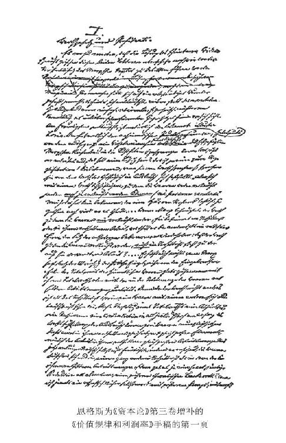
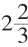

第五十二章 阶级
单纯劳动力的所有者、资本的所有者和土地的所有者——他们各自的收入源泉是工资、利润和地租——，也就是说，雇佣工人、资本家和土地所有者，形成建立在资本主义生产方式基础上的现代社会的三大阶级。
在英国，现代社会的经济结构无疑已经达到最高度的、最典型的发展。但甚至在这里，这种阶级结构也还没有以纯粹的形式表现出来。在这里，一些中间的和过渡的阶层也到处使界限规定模糊起来（虽然这种情况在农村比在城市少得多）。不过，这种情况对我们的考察来说是无关紧要的。我们已经看到，资本主义生产方式的经常趋势和发展规律，是使生产资料越来越同劳动分离，使分散的生产资料越来越大量积聚在一起，从而，使劳动转化为雇佣劳动，使生产资料转化为资本。另一方面，适应于这种趋势，土地所有权同资本和劳动相分离而独立(1)，换句话说，一切土地所有权都转化为同资本主义生产方式相适应的土地所有权形式。
首先要解答的一个问题是：是什么形成阶级？这个问题自然会由另外一个问题的解答而得到解答：是什么使雇佣工人、资本家、土地所有者成为社会三大阶级的成员？
乍一看来，好像就是收入和收入源泉的同一性。正是这三大社会集团，其成员，形成这些集团的个人，分别靠工资、利润和地租来生活，也就是分别靠他们的劳动力、他们的资本和他们的土地所有权来生活。
不过从这个观点来看，例如，医生和官吏似乎也形成两个阶级，因为他们属于两个不同的社会集团，其中每个集团的成员的收入都来自同一源泉。对于社会分工在工人、资本家和土地所有者中间造成的利益和地位的无止境的划分，——例如，土地所有者分成葡萄园所有者，耕地所有者，森林所有者，矿山所有者，渔场所有者，——似乎同样也可以这样说。
〔手稿至此中断。〕
(1) 弗·李斯特说得对：“大领地上盛行的自给自足的经济，不过证明还缺少文明、交通工具、国内工业和富裕城市。因此，我们在俄罗斯、波兰、匈牙利、梅克伦堡到处都看见这种自给自足的经济。以前在英国，这种经济也很盛行；但是，随着商业和工业的勃兴，它们就分成一些中型农场，被租佃制代替了。”（《农业制度、小农经济和移民》1842年版第10页）
弗·恩格斯《资本论》第三册增补408
《资本论》第三册自从交给公众评判以来，已经遇到许多不同的解释。这并没有出乎意料。在编辑出版时，我最关心的是要编成一个尽可能真实的文本，即尽可能用马克思自己的话来表述马克思新得出的各种成果。只是在绝对不可避免的地方，并且在读者一点也不会怀疑是谁在向他说话的地方，我才加进自己的话。这样做曾经遭到指责。人们认为，我应该把摆在我面前的材料变成一本系统地整理好的书，像法国人所说的，en faire un livre，换句话说，就是为了读者的方便而牺牲原文的真实性。但是，我不是这样来理解我的任务的。我没有任何权力作这样的改写。像马克思这样的人有权要求人们听到他的原话，让他的科学发现原原本本按照他自己的叙述传给后世。其次，我也丝毫不愿意擅自侵犯这样一位卓越的人的遗著；那样做对我来说就是失信。第三，那样做也根本没有用处。对于那些不会读或不愿意读的人来说，对于那些在读第一册时就已经不是花费必要的力气去正确理解它，而是花费更多的力气去曲解它的人来说，无论你下多少功夫都是徒劳无益的。而对于那些希望真正理解它的人来说，最重要的却正好是原著本身；对于这些人来说，我的改写顶多只有解说的价值，而且是对某种没有出版的和没有机会见到的东西进行的解说。但是，在初次争论时，就必然要查对原著；在一而再、再而三进行争论时，全部出版原著就是不可避免的了。
这样的争论，对于一部包含着这样多新东西，但却只有一个匆忙写成的、有的地方还留有缺口的初稿的著作来说，是很自然的。在这里，为了排除理解上的困难，为了把一些重要的、其意义在原文中没有充分强调的观点提到更重要的地位，并且为了根据1895年的形势对1865年写成的原文作个别较为重要的补充，我插进来说几句当然会有用处。事实上已经有两点，在我看来需要作一简短的说明。
408 恩格斯的这篇文章是在马克思的《资本论》第三卷出版以后写的。恩格斯在1895年5月21日写给卡·考茨基的信中说，他打算在《新时代》杂志上发表《资本论》第三卷增补，共两篇论文。第一篇论文《价值规律和利润率》是针对资产阶级经济学著作围绕着《资本论》第一卷和第三卷之间的所谓“矛盾”掀起的喧闹写的。这篇论文在恩格斯逝世后不久，发表在德国社会民主党机关报《新时代》上。关于第二篇论文，恩格斯只就他打算在这篇论文中考察的最重要问题，写了一个七点的提纲。手稿的标题是《交易所。〈资本论〉第三卷补充说明》。——1003。
I. 价值规律和利润率
这两个因素之间的表面矛盾的解决，在马克思的原文发表之后会和发表之前一样引起争论，本来是预料中的事。有些人曾经期待出现真正的奇迹，因此，当他们看到面前出现的不是所期待的戏法，而是对于对立的一种简单合理的、平淡无奇的解决时，就感到失望了。当然，最乐于感到失望的，是那位大名鼎鼎的洛里亚。他终于发现了一个阿基米德的支点409，凭借这个支点，像他这样一个小妖居然能把马克思建立的坚固大厦举到空中，摔得粉碎。他愤怒地叫道：什么，这就是解决办法吗？简直是故弄玄虚！经济学家们谈论价值，指的是那种实际上在交换中确定的价值。
“但是，任何一个稍有点理智的经济学家都不会，而且将来也不会去研究这样一种价值，商品既不按照它来出售，也不能按照它来出售（n è possono vendersi mai）…… 当马克思主张，从未充当商品出售依据的价值，是比例于商品中包含的劳动来决定的时候，难道他不是以相反的形式重复正统派经济学家的下述论点：充当商品出售依据的价值，不是比例于商品中耗费的劳动？…… 马克思说，虽然个别价格会偏离个别价值，但全部商品的总价格始终和它们的总价值一致，或者说始终和商品总量中包含的劳动量一致，这样说也无济于事。因为价值既然不外是一个商品和另一个商品相交换的比例，所以单是总价值这个观念，就已经是荒谬的，是胡说……是形容语的矛盾。”
洛里亚还说什么，马克思在这部著作开头就说过，交换所以能使两种商品相等，只是因为它们里面包含有一个同种的并且同样大的要素，这就是同样大的劳动量；现在马克思又极其庄重地否定了自己的主张，断言商品不是按照它们里面包含的劳动量的比例，而是按照完全另外一种比例进行交换。
“什么时候见过这样十足的谬论，这样重大的理论上的破产？什么时候见过这样大吹大擂的、这样庄重的科学上的自杀行为？”（《最新集萃》1895年2月1日第477、478和479页）
请看，我们的洛里亚真是大喜过望了。他不是有理由把马克思当做和他一样的人，当做下流的骗子吗？请看，马克思完全像洛里亚一样在愚弄他的读者，完全像这位渺小到极点的意大利经济学教授一样靠故弄玄虚来过活。不过，这位杜尔卡马腊尽可以这样做，因为他精通此道。而笨拙的北方人马克思却完全陷入了窘境，说了一些胡言乱语和荒谬的话，最后只落得一个庄重的自杀。
我们暂且把商品从未按照也不能按照由劳动决定的价值来出售这个武断的说法留到以后再谈。在这里，我们只看一看洛里亚先生的这个论断，“价值不外是一个商品和另一个商品相交换的比例，所以单是商品的总价值这个观念，就已经是荒谬的，是胡说……”
要是这样，两个商品互相交换的比例，它们的价值，就纯粹是一种偶然的，从外部飞到商品上面来的东西，可能今天是这样，明天又是那样。一公担小麦是和一克金交换还是和一公斤金交换，丝毫不取决于小麦或金所固有的条件，而是取决于一些和它们二者全然无关的情况。因为不然的话，这些条件也必然在交换中发生作用，大体上支配着交换，并且还无视交换而独立存在，这样才能谈得上商品的总价值。但是，大名鼎鼎的洛里亚却认为这是胡说。不管两个商品按什么比例互相交换，这个比例就是它们的价值，这就是一切。因此，价值和价格是同一的。每一个商品有多少种价格，就有多少种价值。而价格是由需求和供给决定的。如果有人还要进一步提出问题，并期望得到答案，那他就是一个傻瓜。

不过事情终究还有一点小小的麻烦。在正常情况下，需求和供给是平衡的。因此我们把世界上现有的全部商品分成两半，一类代表需求，同样大的另一类代表供给。假定每一类商品所代表的价格都是10 000亿马克、法郎、镑或任何其他货币单位。按照亚当·里斯的算法把它们加起来，就是20 000亿的价格或价值。但是洛里亚先生却说：胡说，荒谬。这两类商品加在一起，可以代表20 000亿的价格。但是，说到价值，情况就不同了。如果我们说的是价格，那就是10 000＋10 000＝20 000。但是，如果我们说的是价值，那就是10 000＋10 000＝0。至少在这里谈到商品总体时情形是这样。因为在这里，双方中每一方的商品之所以值10 000亿，是由于双方中每一方都愿意并且能够对另一方的商品给予这个数额。但是，如果我们把双方的商品全部集中在第三者手里，那么第一个人手里就不再有价值了，第二个人也不再有价值了，第三个人更没有了——结果是谁也没有。在这里，我们看到我们的南方人卡利奥斯特罗如此这般把价值概念化为乌有的拿手好戏，不禁要再一次惊叹起来。这就是庸俗经济学的完成！(1)
在布劳恩的《社会立法文库》第七卷第四期上，韦尔纳·桑巴特对于马克思体系的轮廓，总的说来作了出色的描述。第一次由一位德国大学教授，做到了在马克思的著作中大体上看出马克思真正说的是什么，声称对马克思体系的评论不应当是反驳——“让政治野心家去这样干吧”——，而只应当是进一步的发展。当然，桑巴特也在研究我们现在的题目。他研究了价值在马克思体系中具有什么意义的问题，并且得出了如下结论：价值在按资本主义方式生产出来的商品的交换关系中不会表现出来；价值在资本主义生产当事人的意识中是不存在的；它不是经验上的事实，而是思想上、逻辑上的事实；在马克思那里，价值概念按其物质规定性来说，不外是劳动的社会生产力构成经济存在的基础这样一个事实的经济表现；价值规律最终支配着资本主义经济制度下的经济过程，并且对这种经济制度来说普遍具有这样的内容：商品价值是最终支配着一切经济过程的劳动生产力借以发挥决定性作用的一种特有的历史形式。——以上就是桑巴特的说法。这样理解价值规律对资本主义生产形式的意义，不能说不正确。但是，在我看来，这样理解未免太空泛了，还可以提出一个比较严密、比较确切的说法；我认为，这样的理解并没有包括价值规律对于那些受这个规律支配的社会经济发展阶段的全部意义。
在布劳恩的《社会政治中央导报》（1895年2月25日第22期）上，也有一篇关于《资本论》第三卷的精辟论文，作者是康拉德·施米特。特别要指出的是，这篇文章中论证了，马克思怎样从剩余价值中引出平均利润，从而第一次回答了到现在为止的经济学从来没有提出过的问题：这个平均利润率的水平是怎样决定的，比如说为什么是10%或15%，而不是50%或100%。自从我们知道，首先由产业资本家占有的剩余价值是产业利润和地租的唯一源泉以来，这个问题就自然而然地解决了。施米特的论文的这一部分可以看做是直接为洛里亚之流的经济学家写的，如果使那些什么也不愿意看的人睁开眼睛并不是白费力气的话。
关于价值规律，施米特也有他的一些形式方面的思考。他把价值规律叫做为说明实际交换过程而提出的一种科学假说；这个假说甚至在表面上同它完全矛盾的竞争价格现象面前，也被说成是必要的理论上的出发点，是说明这些现象所必不可少的东西。他认为，没有价值规律，就不可能有对于资本主义现实的经济活动的任何理论认识。而在一封他同意我引用的私人信件中，施米特直接宣称资本主义生产形式内的价值规律是一种虚构，即使是理论上必要的虚构。412但是我认为，这种理解是完全不正确的。价值规律对于资本主义生产来说远比单纯的假说——更不用说比虚构，即使是必要的虚构——，具有更重大得多、更确定得多的意义。
无论桑巴特还是施米特——至于那位大名鼎鼎的洛里亚，我在这里顺便提到他，只是把他当做逗人笑的庸俗经济学的陪衬——都没有充分注意到：这里所涉及的，不仅是纯粹的逻辑过程，而且是历史过程和对这个过程加以说明的思想反映，是对这个过程的内部联系的逻辑研究。
具有决定意义的是马克思《资本论》第三卷（上）第154页(2)上的一段话：“全部困难是由这样一个事实产生的：商品不只是当做商品来交换，而是当做资本的产品来交换。这些资本要求从剩余价值的总量中，分到和它们各自的量成比例的一份，或者在它们的量相等时，要求分到相等的一份。”为了说明这种区别，我们现在假定，工人占有自己的生产资料，他们平均劳动时间一样长，劳动强度一样大，并且互相直接交换他们的商品。这样，两个工人在一天内通过他们的劳动加到他们的产品上的新价值就一样多，但是，每个人的产品却会由于以前已经体现在生产资料中的劳动不等而具有不同的价值。已经体现在生产资料中的价值部分代表资本主义经济的不变资本；新追加的价值中用在工人生活资料上的部分代表可变资本；新价值中余下的部分代表剩余价值，这部分价值在这里属于工人。因此，两个工人在扣除只是由他们预付的“不变”价值部分的补偿以后，会得到相等的价值；但代表剩余价值的部分同生产资料价值的比率——它相当于资本主义的利润率——对二者来说却是不同的。不过，因为他们每个人在交换时都使生产资料的价值得到了补偿，所以这件事情也就完全无关紧要了。“因此，商品按照它们的价值或接近于它们的价值进行的交换，比那种按照它们的生产价格进行的交换，所要求的发展阶段要低得多。按照它们的生产价格进行的交换，则需要资本主义的发展达到一定的高度…… 因此，撇开价格和价格变动受价值规律支配不说，把商品价值看做不仅在理论上，而且在历史上先于生产价格，是完全恰当的。这适用于生产资料归劳动者所有的那种状态；这种状态，无论在古代世界还是近代世界，都可以在自耕农和手工业者那里看到。这也符合我们以前所说的见解，即产品发展成为商品，是由不同共同体之间的交换，而不是由同一公社各个成员之间的交换引起的。这一点，正像它适用于这种原始状态一样，也适用于后来以奴隶制和农奴制为基础的状态，同时也适用于手工业行会组织，只要它处于这样一种情况：固定在每个生产部门中的生产资料很不容易从一个部门转移到另一个部门，因而不同部门的互相关系就好像不同的国家或不同的共产主义共同体之间的关系一样。”（马克思《资本论》第三卷（上）第155、156页(3)）
如果马克思来得及把这个第三册再整理一遍，他毫无疑问会把这段话大大加以发挥。现在这段话，不过是关于这个问题所要说的内容的一个大概轮廓。因此，我们要较为详细地谈谈这一点。
我们都知道，在社会的初期，产品是由生产者自己消费的，这些生产者自发地组织在或多或少是按共产主义方式组织起来的公社中；用这些产品的余额和外人进行交换，从而引起产品到商品的转化，是以后的事，这种交换起先只是发生在各个不同的氏族公社之间，但后来在公社内部也实行起来，于是大大地促进公社分解为大小不等的家庭集团。但即使在这种解体发生之后，进行交换的家长也仍旧是劳动的农民；他们靠自己家庭的帮助，在自己的田地上生产他们所需要的几乎一切物品，只有一小部分必需品是用自己的剩余产品同外界交换来的。一个家庭不仅从事农业和畜牧业，而且还把农牧业产品加工成现成的消费品，有些地方甚至还用手磨磨粉，烤面包，把亚麻和羊毛纺成纱，染上色并织成织物，鞣皮，建造并修缮木头房子，制造工具和器具，不少地方还从事木工活和铁工活，以致家庭或家庭集团基本上可以自给自足。
一个这样的家庭要向其他家庭交换或购买的少数物品，在德国，甚至直到19世纪初，还主要是手工业生产的物品。农民并不是不会生产这些物品，他所以自己不生产这些物品，只是因为得不到原料，或者因为买到的物品要好得多或便宜得多。因此，中世纪的农民相当准确地知道，要制造他换来的物品，需要多少劳动时间。村里的铁匠和车匠就在他眼前干活；裁缝和鞋匠也是这样，在我少年时代，裁缝和鞋匠们还挨家挨户地来到我们莱茵地区的农民家里，把各家自备的原料做成衣服和鞋子。农民和卖东西给他的人本身都是劳动者，交换的物品也是他们各人自己的产品。他们在生产这些产品时耗费了什么呢？劳动，并且只是劳动。他们为补偿工具、为生产和加工原料而花费的，只是他们自己的劳动力。因此，如果不按照花费在他们这些产品上的劳动的比例，他们又能怎样用这些产品同其他从事劳动的生产者的产品进行交换呢？在这里，花在这些产品上的劳动时间不仅对于互相交换的产品量的数量规定来说是唯一合适的尺度；在这里，也根本不可能有别的尺度。不然的话，难道可以设想，农民和手工业者竟如此愚蠢，以致有人会拿10小时劳动的产品来和另一个人1小时劳动的产品交换吗？在农民自然经济的整个时期内，只可能有这样一种交换，即互相交换的商品量趋向于越来越用它们所体现的劳动量来计量。自从货币进入这种经济方式的时候起，一方面，适应价值规律（注意，指马克思所表述的价值规律！）的趋势变得更明显了，但另一方面，这种趋势又由于高利贷资本和苛捐杂税的干扰而受到了破坏；价格平均起来达到几乎完全接近价值的程度就需要更长的期间了。
以上所说，也适用于农民的产品和城市手工业者的产品之间的交换。起初，这种交换是在没有商人作中介的情况下，在城市的集日里直接进行的。农民就在集市上卖出买进。在那里，不仅农民知道手工业者的劳动条件，而且手工业者也知道农民的劳动条件。因为手工业者自己在某种程度上也还是一个农民，他不仅有菜园和果园，而且往往还有一小块土地，一两头母牛、猪、家禽等等。因此，中世纪的人能够按照原料、辅助材料、劳动时间而相当精确地互相计算出生产费用——至少就日常用品来说是这样。
但是，在这种以劳动量为尺度的交换中，对于那些需要较长劳动时间、劳动又为不规则的间歇所中断、劳动的成果也不确定的产品来说，例如对于谷物或牲畜来说，这个劳动量又怎样——即使只是间接地、相对地——计算呢？而且不会算的人又怎么办呢？显然，只有通过一个漫长的、往往是在暗中不断摸索、经过曲折才逐渐接近的过程，而且在这个过程中也像在别处一样，人们只有吃一堑才能够长一智。但是，每个人必须大体上收回成本这一点又总是会帮助找出正确的方向，而且，进入交易的物品的种类不多，这些物品的生产方法往往几百年都没有什么变化，这一切又使得上述目的比较容易达到。其实要使这些产品的相对价值量相当近似地确定下来，决不需要很长的时间，这一点，单是由下面这样一个事实就可以得到证明：像牲畜这样的商品，由于每头牲畜的生产时间很长，它的相对价值似乎是最难确定的，但它却成了最早的、几乎得到普遍承认的货币商品。要使牲畜成为货币商品，牲畜的价值，它对一系列其他商品的交换比率，必须已经具有比较不寻常的、在包含有许多部落的区域内已经得到一致承认的确定性。当时的人——不管是牲畜饲养者还是他们的买主——肯定都已相当精明，他们不会在交换中得不到等价物而把所耗费的劳动时间白白送给别人。相反，人们越是接近商品生产的原始状态——例如俄国人和东方人——，甚至在今天，他们就越是把更多的时间浪费在持久的、互不相让的讨价还价上，去为他们花费在产品上的劳动时间争得充分的代价。
从价值由劳动时间决定这一点出发，全部商品生产，以及价值规律的各个方面借以发生作用的多种多样的关系发展起来了，这在《资本论》第一册第一篇中已作了叙述；也就是说，特别是那些使劳动成为形成价值的唯一因素的条件发展起来了。而且，这些条件是在当事人并未意识到的情况下起作用的，只有通过辛勤的理论研究才能从日常实践中把它们抽象出来，也就是说，它们是按自然规律的方式起作用，而马克思也已证明，这一切都是从商品生产的本性中必然发生的。最重要和最关键的进步，是向金属货币的过渡。但是这种过渡也造成了如下的后果：价值由劳动时间决定这一事实，从此在商品交换的表面上再也看不出来了。从实践的观点来看，货币已经成了决定性的价值尺度；而且，进入交易的商品种类越是繁多，越是来自遥远的地方，因而生产这些商品所必需的劳动时间越是难以掌握，情况就越是这样。此外，货币本身最初多半来自外地；即使本地出产贵金属，农民和手工业者一方面仍然无法近似地估计出花费在贵金属上的劳动，另一方面，对他们来说，由于习惯于用货币进行计算，关于劳动是价值尺度这种属性的意识已经变得十分模糊；货币在人民大众的观念中开始代表绝对价值了。
总之，只要经济规律发生作用，马克思的价值规律对于整个简单商品生产时期来说便是普遍适用的，也就是说，直到简单商品生产由于资本主义生产形式的出现而发生变形之前是普遍适用的。在此之前，价格都以马克思的规律所决定的价值为重心，并且围绕着这种价值而波动，以致简单商品生产发展得越是充分，一个不为外部的暴力干扰所中断的较长时期内的平均价格就越是与价值趋于一致，直至量的差额小到可以忽略不计的程度。因此，马克思的价值规律，从开始出现使产品转化为商品的那种交换时起，直到公元15世纪止这个时期内，在经济上是普遍适用的。但是，商品交换在有文字记载的历史之前就开始了。在埃及，至少可以追溯到公元前3500年，也许是5000年；在巴比伦，可以追溯到公元前4000年，也许是6000年；因此，价值规律已经在长达5000年至7000年的时期内起支配作用。现在，我们可以来欣赏一下洛里亚先生的彻底的深思精神了。洛里亚先生竟然把这个时期内普遍和直接适用的价值叫做这样一种价值，商品从未按照它来出售，也不能按照它来出售，并且说任何一个稍有点健全理智的经济学家都不会去研究它！
到目前为止，我们一直没有谈商人。直到现在，在我们进而考察简单商品生产向资本主义商品生产转化之前，我们可以不考虑商人的介入。商人对于从前一切停滞不变、可以说由于世袭而停滞不变的社会来说，是一个革命的要素。在这样的社会中，农民不仅把他的份地，而且也把他作为自由的私有者、自由的或依附的佃农或农奴的地位，世袭地和几乎不可转让地继承下来，城市手工业者则把他的手工业和他的行会特权，世袭地和几乎不可转让地继承下来，而且他们每一个人还会把他的买主、他的销售市场以及他自幼作为祖传职业学到的技能继承下来。现在商人来到了这个世界，他应当是这个世界发生变革的起点。但是，他并不是自觉的革命者；相反，他与这个世界骨肉相连。中世纪的商人决不是个人主义者；他像他的所有同时代人一样，本质上是共同体的成员。在农村，占统治地位的是从原始共产主义中生长起来的马尔克公社。起初，每个农民都有同样大小的份地，其中包括面积相等的每种质量的土地，并且每个人在公共马尔克中也相应地享有同样大小的权利。自从马尔克公社变为闭关自守的组织，没有新的份地可以分配以来，份地由于继承遗产等等原因而发生了再分割，与此相适应，马尔克的权利也发生了再分割；但是，由于仍旧以每份份地作为一个单位，结果产生了二分之一、四分之一、八分之一的份地，以及相应地在公共马尔克中分享二分之一、四分之一、八分之一的权利。以后的一切同业公会，都是按照马尔克公社的样子建立起来的，首先就是城市的行会，它的规章制度不过是马尔克的规章制度在享有特权的手工业上而不是在一个有限的土地面积上的应用。整个组织的中心点，是每个成员都同等地分享那些对全体来说都有保证的特权和利益。这一点还非常清楚地表现在1527年的埃尔伯费尔德和巴门的“纺纱业”特权上。（图恩《下莱茵的工业》第2卷第164页及以下几页）以上所说也适用于矿业劳动组合。在那里，每个股份都享有同等的一份利益，并且像马尔克成员的份地一样，每个股份的权利和义务也可以一道分割。以上所说也完全适用于经营海外贸易的商人公会。亚历山大里亚港或君士坦丁堡港的威尼斯人和热那亚人，他们每一个“民族”都在各自的商馆（Fondaco，除中心办事处之外，还包括宿舍、餐馆、仓库、展览厅和售货厅）建立了完整的商业公会；它们的成立是为了对付竞争者和顾客；它们按照内部确定的价格来出售商品；它们的商品都有一定的质量，要经过公开的检验并且往往盖上印记作为保证；它们还共同规定了向当地居民购买产品时许可支付的价格等等。汉撒同盟的人在挪威卑尔根的德意志桥上就是这样做的，他们的荷兰和英国的竞争者也是这样做的。凡是低于价格出售或高于价格购买的人都要倒霉！这种人受到的联合抵制在当时意味着必然的毁灭，更不用说商会对违反规章的人所直接给予的惩罚了。此外，还有为一定目的而建立起来的更狭窄的商业团体，例如，在14世纪和15世纪，多年控制着小亚细亚的福西亚明矾矿和希俄斯岛的明矾矿的热那亚的“摩阿那”。又如，从14世纪末就同意大利和西班牙做生意并在那里设立了分支机构的巨大的拉文斯贝格贸易公司；又如奥格斯堡的富格尔、韦尔泽、弗林、赫希斯泰特尔等和纽伦堡的希尔施福格尔等创立的德国公司，曾以66 000杜卡特的资本和三艘船，参加1505年至1506年葡萄牙对印度的远征，获得了150%（根据另一种材料，是175%）的纯利润。（海德《黎凡特(4)贸易史》第2卷第524页）此外，还有一系列别的“垄断”公司，对于它们，路德曾经表示了极大的愤怒。
在这里，我们第一次遇到了利润和利润率。而且是商人有意识地和自觉地力图使这个利润率对所有参加者都均等。威尼斯人在黎凡特各国，汉撒同盟的人在北方各国，购买商品时每人所支付的价格都和邻人一样，商品花费的运费也一样。他们出售商品得到的价格以及购买回头货时支付的价格，都和本“民族”的所有其他商人一样。因此，利润率对所有的人来说都是均等的。对大贸易公司来说，利润要按照投资份额的比例来分配是理所当然的事情，就像马尔克的权利要按照含权份地所占比例来分配，或者矿业的利润要按照股份所占比例来分配一样。因此，相等的利润率，在其充分发展的情况下本来是资本主义生产的最后结果之一，而这里在其最简单的形式上却表明是资本的历史出发点之一，甚至是马尔克公社直接生出的幼枝，而马尔克公社又是原始共产主义直接生出的幼枝。
这个原始的利润率必然是很高的。经商所冒的风险非常大，这不仅因为海盗异常猖獗；而且因为各竞争民族一有机会，往往会采取各种各样的暴力行为；最后，销售和销售条件要依靠外国君主的特许，而违背或撤销特许的事情又经常发生。因此，利润中必须包含一笔很高的保险金。此外，周转是迟滞的，营业的进行是缓慢的，而在情况最好的时候（当然，这种时候很少是长久的），营业又是获得垄断利润的垄断贸易。当时通行的利息率很高，这也证明利润率平均是很高的，因为利息率整个说来总是要低于普通商业的利润率的。
但是，这种由商会的共同行动造成的、对一切参加者来说都相等的高利润率，只是在本商会的范围内，在这里也就是在一个“民族”的范围内才有效。威尼斯人、热那亚人、汉撒同盟的人、荷兰人——每个民族都各有特殊的利润率，甚至每个销售区域当初都或多或少各有特殊的利润率。这些不同的团体利润率的平均化，是通过相反的道路，即通过竞争来实现的。首先，同一个民族在不同市场上的利润率得到平均化。如果威尼斯的商品在亚历山大里亚得到的利润大于在塞浦路斯、君士坦丁堡或特拉佩宗特得到的利润，那么，威尼斯人就会把更多的资本投入对亚历山大里亚的贸易，而把相应的资本从其他市场的贸易中抽出。然后，在向同一些市场输出同种商品或类似商品的各民族之间，也必然会逐渐发生利润率的平均化，其中有些民族往往会被压垮， 从而退出舞台。但是，这个过程不断为政治事件所中断，例如，整个黎凡特贸易由于蒙古人和土耳其人的入侵便因而归于衰落。1492年以来地理和商业上的大发现174，只是加速并最后完成了这个衰落过程。
接着而来的销售区域的突然扩大，以及与此相连的交通线的巨大改变，起初并没有引起商业经营方式的任何重大的变化。起初，同印度和美洲进行贸易的也仍然主要是这些商会。不过，首先，站在这些商会背后的是一些较大的民族。经营美洲贸易的整个大联合的西班牙代替了经营黎凡特贸易的卡泰罗尼亚人；除西班牙外，还有英国和法国这样两个大国；甚至最小的荷兰和葡萄牙，也至少像前一个时期最强大的商业民族威尼斯一样强大。这种情况对16世纪和17世纪的行商、商业冒险家提供的支持，使那种对自己的成员实行武装保护的商会越来越成为多余的了，从而使商会的费用直接成为多余的负担。其次，财富在个人手里的积累现在已经显著加快，以致单个商人很快就能够在一个企业中投下像以前整个公司所投的那样多的资金。商业公司在它们还继续存在的地方多半都变成了武装的团体，它们在祖国的保护和庇护下，对新发现的整块土地实行征服，并进行垄断的剥削。但是，在新的地区主要也是以国家名义建立的殖民地越多，商会贸易就越会让位于单个商人的贸易，从而利润率的平均化就会越来越成为只是竞争的事情。
到现在为止，我们只了解了商业资本的利润率。因为，到现在为止还只有商业资本和高利贷资本；产业资本只是在这以后才发展起来。生产主要还是掌握在自有生产资料的劳动者手里，因而他们的劳动不为任何资本提供剩余价值。如果说他们必须无代价地把一部分产品交给第三者，那就是以贡赋的形式交给封建主。因此，商人资本至少在开始的时候只能从本国产品的外国购买者那里，或者从外国产品的本国购买者那里赚取利润；只是到了这个时期的最后，对意大利来说，也就是随着黎凡特贸易的衰落，外国的竞争和销路的困难才迫使制造出口商品的手工业生产者把商品低于价值卖给出口商人。因此，我们在这里看到了这样一种现象：在国内单个生产者之间进行的零售贸易中，商品平均说来是按照价值出售的，但是在国际贸易中，由于上面所说的理由，通常都不是如此。这种情况完全和现在的世界相反。现在，生产价格适用于国际贸易和批发商业，但在城市零售贸易中，价格的形成则是由完全不同的利润率来调节的。例如，现在牛肉从伦敦批发商人转到伦敦消费者个人手中时增加的价格，要大于从芝加哥批发商人转到伦敦批发商人手中时增加的价格（包括运费在内）。
在价格的形成上逐渐引起这种变革的工具是产业资本。产业资本的萌芽早在中世纪就已形成，它存在于以下三个领域：航运业、采矿业、纺织业。意大利和汉撒同盟各沿海共和国所经营的那种规模的航运业，没有水手即雇佣工人（他们的雇佣关系，可能被实行分红的组合形式所掩盖）是不行的，而且当时的大桡船，没有摇桨工即雇佣工人或奴隶也是不行的。原来由合伙的劳动者构成的矿业组合，几乎到处都变成了靠雇佣工人进行开采作业的股份公司。在纺织业中，商人已经开始让小织造工匠直接为自己服务，他供给他们纱，并且付给他们固定的工资，让他们把纱织成织物；总之，他已经由一个单纯的购买者变成所谓的包买商了。
在这里，我们看到了资本主义剩余价值形成的开端。矿业组合作为闭关自守的垄断团体，我们可以把它撇开不说。就航运业主来说，很明显，他们的利润至少应等于本国的普通利润加上保险费、船舶损耗费等等额外费用。而至于纺织业的包买商，他们最先把那种直接为资本家生产的商品拿到市场上来，并同手工业者自己生产的同类商品进行竞争，他们的情况又怎样呢？
商业资本的利润率早已存在。它也已经平均化为近似的平均率，至少对当地来说是这样。那么，是什么原因推动商人去承担包买商这一特别的业务呢?唯一的原因是：在出售价格与别人相等的情况下可望获得更大的利润。他已经有了这种前景。当他雇用小织造工匠来为自己服务时，他就打破了生产者只能出售自己制成的产品而不能出售别的东西这样一种传统的生产限制。商人资本家购买了暂时还占有生产工具但已经不再有原料的劳动力。这样，他就保障了织工经常有活干，却因此也就能够压低织工的工资，使他们完成的劳动时间的一部分得不到报酬。因此，包买商就成了超过他原来的商业利润以上的剩余价值的占有者。当然，他为了达到这个目的，还必须使用追加资本，去购买纱等物品并让它们留在织工手里，直到织成织物为止。而在以前，他只是在采购织物的时候才支付全部价格。但是第一，在大多数情况下，他还必须把一笔额外资本预付给织工，因为织工通常只有在无力偿债而陷于农奴地位的条件下才会屈从于新的生产条件。第二，即使撇开这点不说，计算总是采取如下的形式：
假定我们这个商人用资本30 000杜卡特、策欣、镑或任何其他货币单位来经营他的出口业务。其中10 000用来采购国内商品，20 000用在海外销售市场上。资本每两年周转一次。年周转额＝15 000。现在假定我们这个商人要自己经营织造业，成为包买商。为此他必须追加多少资本呢？我们假定他所出售的那批织物的生产时间平均为两个月（这段时间当然是很长的）。我们再假定一切都要用现金支付。因此，他必须追加足够的资本，以便为他的织工提供两个月的纱。因为他的年周转额是15 000，所以他在两个月内用来购买织物的是2 500。假定其中2 000代表纱的价值，500代表织工的工资。这样，我们这位商人就需要有追加资本2 000。我们假定他用新方法从织工那里占有的剩余价值只等于织物价值的5%，这当然只是一个很低的剩余价值率25%（2 000c＋500v＋125m；m’＝125/500＝25%，p’＝125/2500＝5%） 。这样一来，我们这位商人从他的年周转额15 000中会赚到额外利润750，因此，只要年他就可以把他的追加资本捞回来了。
但是，为了加快销售和周转，从而使同一资本可以在较短的时间内赚到同样多的利润，也就是说，在同一时间内比以前赚到更多的利润，他会把他的剩余价值的一小部分赠给买者，也就是说，会比他的竞争者卖得便宜一些。这些竞争者也会逐渐变成包买商，这时，额外利润对所有的人都会变为普通利润，甚至对于所有人的已经增加的资本来说，还会变为更低的利润。利润率的均等再一次形成了，虽然所形成的利润率的水平可能不一样了，因为国内生产的剩余价值已经有一部分让给国外的买者了。
产业从属于资本的下一步，是工场手工业的出现。工场手工业使得在17世纪和18世纪还多半是自己充当自己的出口商人的工场手工业者（在德国直到1850年几乎普遍都是这样，甚至到今天有些地方也还是这样），有可能比他的落后的竞争者即手工业者按比较便宜的方法从事生产。同一个过程又发生了。工场手工业资本家占有的剩余价值使得他或者同他分享剩余价值的出口商人，能够比自己的竞争者卖得便宜一些，直到新的生产方式得到普遍推广为止，这时平均化就又重新出现。已有的商业利润率，即使它只是在局部地区实现了平均化，仍然是一张普罗克拉斯提斯的床，以它为标准，超额的产业剩余价值都会被毫不留情地砍掉。
如果说工场手工业由于产品变得便宜而迅速发展起来，那么大工业就更加如此。大工业通过它的不断更新的生产革命，使商品的生产费用越降越低，并且无情地排挤掉以往的一切生产方式。它还由此为资本最终地征服了国内市场，使自给自足的农民家庭的小生产和自然经济陷于绝境，把小生产者间的直接交换排挤掉，使整个民族为资本服务。它还使不同商业部门和工业部门的利润率平均化为一个一般的利润率，最后，它在这个平均化过程中保证工业取得应有的支配地位，因为它把一向阻碍资本从一个部门转移到另一个部门的绝大部分障碍清除掉。这样，对整个交换来说，价值转化为生产价格的过程就大致完成了。可见这种转化是在当事人的意识或意图之外，依照客观规律进行的。至于竞争会使超过一般利润率的利润降为一般水平，因而会从最初的产业家占有者手里把超过平均水平的剩余价值重新夺走，这在理论上完全没有困难。而在实践上却很困难，因为占有超额剩余价值的各生产部门，也就是说，可变资本较多而不变资本较少，因而资本构成较低的各生产部门，按照它们的性质来说，从属于资本主义的经营恰恰是最晚的，而且是最不充分的；首先是农业。相反，至于把生产价格提高到商品价值以上，——而这是为了把资本构成较高的部门的产品中所包含的不足的剩余价值提高到平均利润率水平所必需的，——这在理论上看来好像是非常困难的，而在实践上正如我们所看到的那样，却是最容易和最先办到的。因为，这类商品在刚开始按照资本主义方式生产并加入资本主义商业中去的时候，会同那些按照资本主义以前的方法生产的、因而比较贵的同类商品进行竞争。这样，资本主义的生产者即使放弃一部分剩余价值，也仍然能够获得当地通行的利润率。这种利润率本来和剩余价值没有直接关系，因为在按照资本主义方式生产之前，也就是在产业利润率成为可能之前，这种利润率早已从商业资本中产生了。
(1) 这位“因为有名声所以被人知道”的先生（用海涅的话来说）后来也觉得，对于我为第三卷所作的序言，——在这篇序言已经在1895年《评论》第1期上用意大利文发表之后，——非作出答复不可。答复登载在1895年2月25日的《社会改革》上。他先对我奉承了一番，这在他来说是必不可少的，但正因为如此，也就加倍令人讨厌。然后他声明说，他从来没有想要把马克思在唯物史观方面的功劳据为己有。他说他早在1885年就承认了这些功劳，那是在一篇杂志论文中附带地提了一下。但是，正是在应当表示承认的地方，即在他的那本涉及这个问题的著作中，他却更加顽固地闭口不谈这些功劳。在这本书中，直到第129页才提到马克思的名字，而且只是在说到法国的小土地所有制时才提到。而现在他却大胆宣布，马克思根本不是这个理论的创始人；如果说这个理论不是由亚里士多德早就大体上提了出来，那么至少哈林顿在1656年已经明确无误地宣布了它，并且在马克思之前很久，已经有一连串历史学家、政治家、法学家和经济学家对这个理论作了阐述。这就是在洛里亚著作的法文版中可以读到的一切。总之，马克思是一个十足的剽窃者。在我使他不可能再从马克思那里剽窃什么来大吹大擂之后，他就厚起脸皮说，马克思完全和他一样，也是用别人的羽毛来装饰自己。——关于我在其他方面对他的抨击，洛里亚只提到这样一点，即他原来曾以为，马克思根本没有打算写《资本论》第二卷，更谈不上第三卷。“现在恩格斯得意扬扬地把第二卷和第三卷扔在我面前作为答复……妙极了！这两卷书使我感到这么大的愉快，我由此得到了这么多精神上的享受，以致从来没有一个胜利像今天的失败——如果这真是失败的话——这样使我觉得如此可喜。但是，这真是失败吗？马克思真的为了发表而写下这么一大堆不连贯的笔记，好让恩格斯怀着虔敬的友谊把它们编在一起吗？真的可以设想，马克思……以为这些文稿会成为他的著作和他的体系的王冠吗？真的可以相信，马克思会发表关于平均利润率的那一章吗？在这一章里，好多年前就答应要提出的解决，被归结为最无聊的故弄玄虚和最庸俗的文字游戏。这至少是可以怀疑的…… 在我看来，这证明马克思在发表他的光辉（splendido）著作以后就没有打算写什么续卷。说不定，他原来就是想把他的巨著交给他的继承人去完成，而自己不担负什么责任。”
在第267页上就是这样写的。海涅关于他的庸俗的德国读者说过一句最轻蔑不过的话：“作者终于和他的读者搞熟了，好像读者是有理性的生物了。”410大名鼎鼎的洛里亚又要把他的读者看成什么呢？最后，又向我这个倒霉的人倾注了一大堆新的恭维话。在这样做时，我们的斯加纳列尔很像巴兰，他本来是去诅咒人的，但是他的嘴却不听使唤，竟说出了“祝福和爱戴的话”。善良的巴兰与众不同之处正在于，他骑着一头比主人还要聪明伶俐的驴。可是这一回，巴兰显然把他的驴留在家里了。411
(2) 见本卷第196页。——编者注
(3) 参看本卷第197—198页。——编者注
(4) 地中海东岸诸国的旧称。——编者注
409 指古希腊数学家阿基米德的名言：“给我一个坚实的支点，我将把地球彻底翻转过来。”——1006。
[410] 见海涅诗集《〈罗曼采罗〉后记》。——1012。
[411] 关于圣经传说中巴兰的故事，见《旧约全书·民数记》第22—24章。——1012。
412 康·施米特关于资本主义生产形式内的价值规律是一种虚构的观点，见他于1895年3月1日写给恩格斯的信。恩格斯在1895年3月12日给施米特的信中对这种错误观点作了批判性分析。——1013。
II. 交易所
1. 从第三卷第五篇，特别是第[二十七]章可以看出，交易所在整个资本主义生产中占有怎样的地位。但是，自从1865年写作本书以来，情况已经发生了变化，这种变化使今天交易所的作用大大增加了，并且还在不断增加。这种变化在其进一步的发展中有一种趋势，要把全部生产，工业生产和农业生产，以及全部交往，交通工具和交换职能，都集中在交易所经纪人手里，这样，交易所就成为资本主义生产本身的最突出的代表。
2. 1865年交易所在资本主义体系中还是一个次要的要素。国债券代表着交易所证券的主要部分，它们的数量也还比较少。此外，股份银行在大陆和美国虽已盛行，但它们在英国却刚刚在着手并吞贵族的私人银行。它们的数量还比较少。第三，铁路股票和现在相比也还比较少。直接生产事业还很少采取股份形式。这种形式像银行一样，大多数出现在一些比较贫穷的国家，如德国、奥地利、美国等等。当时，“老板的监督”还是一种不可克服的迷信。
因此，当时交易所还是资本家们互相夺取他们积累的资本的地方，它同工人所以直接有关，不过在于它是资本主义经济的普遍的败坏道德的影响的新证据，并且是下述加尔文教义的证实：在这个世间，福与祸，富与贫，即享乐和权力与穷困和受奴役，都是上帝预先决定的，或者说是碰运气。
3. 现在情况不同了。自1866年危机以来，积累以不断加快的速度进行，以致在所有的工业国，至少在英国，生产的扩展赶不上积累的增长，单个资本家的积累已经不能在扩大自身营业方面全部用掉；英国的棉纺织业在1845年就已如此，还有铁路投机。但是随着这种积累的增长，食利者的人数也增加了。这种人对营业上经常出现的紧张已感到厌烦，只想悠闲自在，或者只揽一点像公司董事或监事之类的闲差事。第三，为了便于这样流来流去的大量货币资本得到使用，现在又在以前没有设立过有限公司的地方，到处都设立了合法的新式有限公司。以前负无限责任的股东的责任，也或多或少地减轻了（1890年德国的股份公司。认股额的40%！）。
4. 此后，工业逐渐转变为股份企业。一个部门接着一个部门遭到这种命运。首先是现在需要巨额投资的铁业（在此以前是采矿业，不过还没有矿业股票）。然后是化学工业，以及机器制造厂。在大陆，有纺织业，在英国，还只有兰开夏郡的少数几个地方（奥尔德姆的纺纱业，伯恩利的织布业等等，缝衣合作社，但后者只是准备阶段，在下一次危机到来时，又会落到老板手里），啤酒厂（数年前，有几家美国啤酒厂卖给了英国资本，然后有基尼斯、巴斯、奥尔索普等公司）。然后有托拉斯。这种托拉斯创立了实行共同管理的巨大企业（例如联合制碱托拉斯）。普通的独家商号只不过越来越成为使营业扩大到足以“建立股份公司”地步的准备阶段。
商业也是这样。里夫公司、帕森斯公司、摩利公司、莫里逊公司、狄龙公司，全都建立股份公司了。现在，甚至零售商店都已如此，而且不单是徒具“百货商店”之类的合作商店的虚名。
在英国，银行和其他信用机构也是这样。——大批新设的，都是股份有限公司。甚至像格林银行等一些老银行，也从原来只有七个私人股东变成有限公司了。
5. 在农业方面也有同样的情形。大大扩充的银行，特别是在德国（在各式各样的官僚名义下），日益成为抵押土地的持有者；连同这些银行的股票一起，地产的实际的最高所有权被转移到了交易所手中；而在田庄落入债权人手里的时候，情形就更是如此。在这里，开垦草原所引起的农业革命，产生了强烈影响；长此以往，总有一天，英国和法国的土地也都会控制在交易所手中。
6. 现在，一切国外投资都已采取股份形式。如果只讲英国：美国的铁路、北与南（参看证券行情表）、戈尔德贝格等等。
7. 然后是开拓殖民地。现在，这纯粹是交易所的附属物。欧洲列强为了交易所的利益在几年前就把非洲瓜分了。法国人征服了突尼斯和东京(1)。非洲已被直接租给各个公司（尼日尔，南非，德属西南非和德属东非）。马绍纳兰和纳塔尔也为了交易所的利益而被罗得斯占领了。
(1) 越南北部的旧称。——编者注
人名索引
A
阿巴思诺特，乔治（Arbuthnot, George 1802—1865）——英国财政部官员；经济学著作家；通货原理的拥护者，罗·皮尔爵士的私人秘书。——622。
阿恩德，卡尔（Arnd, Karl 1788—1877）——德国资产阶级经济学家，庸俗政治经济学的代表人物。——407、892。
阿基米德（Archimedes 公元前287前后—212）——古希腊数学家和力学家。——1006。
阿什利——见舍夫茨别利伯爵，安东尼·阿什利·库珀。
阿特伍德，马赛厄斯（Attwood, Matthias 1779—1851）——英国银行家和经济学家，以“小先令派”闻名的伯明翰派代表人物。——634。
阿特伍德，托马斯（Attwood, Thomas 1783—1856）——英国银行家、政治家和经济学家。——610、634。
安·斯图亚特（Anna[Ann, Anne]Stuart 1665—1714）——英国女王（1702—1714）。——690。
安德森，亚当（Anderson, Adam 1692前后—1765）——苏格兰资产阶级经济学家，写有关于贸易史方面的著作。——371。
安德森，詹姆斯（Anderson, James 1739—1808）——苏格兰资产阶级经济学家，研究了级差地租理论的基本特征。——699、700。
安德森，詹姆斯·安德鲁（Anderson, James Andrew）——英国银行家，19世纪中叶为苏格兰银行经理。——595、596、637。
安凡丹，巴泰勒米·普罗斯佩（Enfantin, Barthélemy-Prosper人称安凡丹老爹Père Enfantin 1796—1864）——法国空想社会主义者，圣西门的门徒，同巴扎尔一起领导圣西门学派；自40年代中起在许多资本主义企业中担任领导职务。——684。
奥德，威廉·密勒（Ord, William Miller 1834—1902）——英国医生。——110、 111。
奥德曼，卡尔·古斯塔夫（Odermann, Karl Gustav 1815—1904）——德国教育家，写有许多贸易教科书。——349。
奥弗伦—葛尼公司（Overend, Gurney and Co.）——伦敦的一家大贴现银行。——463、466、590、596、650。
奥弗斯顿勋爵——见劳埃德，赛米尔·琼斯，奥弗斯顿男爵。
奥康瑙尔，查理（O’Conor, Charles 1804—1884）——美国律师和政治家，民主党人。——433。
奥普戴克，乔治（Opdyke, George 1805—1880）——美国企业家、政治家和经济学家。——407、754。
奥日埃，马利（Augier, Marie 19世纪中叶）——法国新闻工作者，财政经济学家，写有经济学方面的著作。——672、691。
B
巴尔扎克，奥诺雷·德（Balzac, Honoré de 1799—1850）——法国现实主义作家。——47。
巴师夏，弗雷德里克（Bastiat, Frédéric 1801—1850）——法国资产阶级庸俗经济学家，阶级调和论的代表人物。——169。
拜比吉，查理（Babbage, Charles 1792—1871）——英国数学家、力学家和资产阶级经济学家。——119、129。
贝恩斯，约翰（Baynes, John）——英国政论家，布莱克本市议会议员；1857年发表了两篇关于棉花贸易的论文。——139—140。
贝尔（Bell, G. M.）——苏格兰银行经理（19世纪上半叶）；写有一些论述银行业和货币流通的著作。——618。
贝尔纳—奥斯本，拉尔夫（Bernal Osborne, Ralph 1808—1882）——英国政治活动家，自由党人，议会议员；曾任海军部秘书长（1852—1858）。——153。
贝克，罗伯特（Baker, Robert）——英国工厂视察员（1878年以前）。——104、106、138—139、141、143。
贝克尔，伊曼努尔（Bekker, Immanuel 1785—1871）——德国语言学家，整理并出版了古典古代著作家（柏拉图、亚里士多德、阿里斯托芬等）的著作。——432。
贝魁尔，康斯坦丁（Pecqueur, Constantin 1801—1887）——法国经济学家，空想社会主义者，圣西门的学生。——688。
贝勒斯，约翰（Bellers, John 1654—1725）——英国经济学家；强调劳动对财富形成的意义；曾提出一些空想的社会改革方案。——319。
贝列拉，雅克·埃米尔（Péreire, Jacques-Émile 1800—1875）——法国银行家，20—30年代为圣西门主义者，第二帝国时期为波拿巴主义者，立法团议员；1852年与其弟伊·贝列拉创办股份银行动产信用公司。——684。
贝列拉，伊萨克（Péreire, Isaac 1806—1880）——法国银行家，20—30年代为圣西门主义者，第二帝国时期为波拿巴主义者，立法团议员；1852年与其兄埃·贝列拉一起创办股份银行动产信用公司；写有信贷方面的著作。——500。
贝林（Baring）——英国金融和银行家族。——606。
贝色麦，亨利（Bessemer, Henry 1813—1898）——英国工程师和化学家；曾发明较节约的炼钢方法。——84。
本廷克，乔治（Bentinck, George 1802—1848）——英国政治活动家，辉格党人，议会议员，保护关税主义的拥护者。——470。
比肯斯菲尔德伯爵——见迪斯累里，本杰明。
比雷，安东·欧仁（Buret, Antoine-Eugène 1811—1842）——法国经济学家和社会学家，西斯蒙第的信徒，空想社会主义观点的代表人物。——908。
毕希，约翰·格奥尔格（Büsch, Johann Georg 1728—1800）——德国经济学家，基本上持重商主义观点。——692。
波珀，约翰·亨利希·莫里茨·冯（Poppe, Johann Heinrich Moritz von 1776—1854）——德国数学家和工艺学家。——374。
博赞克特，詹姆斯·惠特曼（Bosanquet, James Whatman 1804—1877）——英国银行家、经济学家和历史学家；除写有一些经济学著作外，还发表过一系列有关圣经年表的著作。——416。
布莱特，约翰（Bright, John 1811—1889）——英国政治家，棉纺厂主，自由贸易派领袖和反谷物法同盟创始人；60年代初起为自由党（资产阶级激进派）左翼领袖；曾多次任自由党内阁的大臣。——712。
布朗，威廉（Brown, William 1784—1864）——英国商人和银行家，自由贸易的拥护者。——636。
布劳恩，亨利希（Braun, Heinrich 1854—1927）——德国新闻工作者，社会民主党人，改良主义者，《新时代》杂志创办人之一，《社会立法和统计学文库》、《社会政治中央导报》等刊物的编辑，帝国国会议员；阿·布劳恩的哥哥。——1011— 1012。
布里斯科，约翰（Briscoe, John）——英国企业家（17世纪末），曾提议成立农业银行，以摆脱高利贷盘剥；议会议员。——680。
C
查理一世，查理大帝（Charles I, Charlemagne 742—814）——法兰克国王（768—800）和皇帝（800—814）。——675、677、889。
查理二世（Charles II 1630—1685）——英国国王（1660—1685）。——681、690。
查默斯，托马斯（Chalmers, Thomas 1780—1847）——苏格兰神学家和资产阶级经济学家；马尔萨斯的追随者。——274、500。
查普曼，大卫·巴克利（Chapman, David Barcly）——奥弗伦—葛尼公司的代表（19世纪上半叶）。——486、578、596、598—599、602—611、613、650。
柴尔德，乔赛亚（Child, Josiah 1630—1699）——英国商人、经济学家和银行家；重商主义者；东印度公司董事长。——446、681—682。
茨维尔兴巴特（Zwilchenbart, R.）——瑞士商人（19世纪上半叶）。——531。
D
达夫，帕特里克·爱德华（Dove, Patrick Edward 1815—1873）——英国资产阶级哲学家和经济学家。——713、719。
戴韦南特，查理（Davenant, Charles 1656—1714）——英国经济学家和统计学家，重商主义者。——744。
戴维森，丹尼尔·米切尔（Davidson, Daniel Mitchell）——英国商人，1854年因贸易诈骗被揭露，不得不逃出英国。——607。
但丁·阿利格埃里（Dante Alighieri 1265—1321）——意大利诗人。——24。
德尔，路易·弗朗索瓦·欧仁（Daire, Louis-François-Eugène 1798—1847）——法国著作家和资产阶级经济学家，政治经济学著作的出版者。——888。
迪斯累里，本杰明，比肯斯菲尔德伯爵（Disraeli[D’Israeli], Benjamin, Earl of Beaconsfield 1804—1881）——英国政治活动家和著作家，40年代参加“青年英国”；托利党领袖，19世纪下半叶为保守党领袖；曾任财政大臣（1852、1858—1859和1866—1868），内阁首相（1868和1874—1880）。——470。
东巴尔，克里斯托夫·约瑟夫·亚历山大·马蒂约·德（Dombasle, Christophe-Joseph-Alexandre-Mathieu de 1777—1843）——法国农学家。——860、917。
杜尔哥，安娜·罗伯尔·雅克，洛恩男爵（Turgot, Anne-Robert-Jacques, baron de l’Aune 1727—1781）——法国国务活动家、经济学家和哲学家；重农学派的代表，魁奈的学生；财政总监（1774—1776）。——702。
杜罗·德拉马尔，阿道夫·茹尔·塞扎尔·奥古斯特（Dureau de La Malle, Adolphe-Jules-César-Auguste 1777—1857）——法国诗人、历史学家、语文学家和考古学家。——118。
E
恩格斯，弗里德里希（Engels, Friedrich 1796—1860）——恩格斯的父亲。——531。
F
法尔曼，彼得（Fireman, Peter 生于1863年）——美国化学家和工厂主，生于俄国，住在德国和美国，写有关于平均利润率的文章。——17、18、26。
菲瑟灵，西蒙（Vissering, Simon 1818—1888）——荷兰资产阶级经济学家和统计学家，庸俗政治经济学的代表。——354、356。
费尔贝恩，威廉（Fairbairn, William 1789—1874）——英国厂主，工程师和发明家。——105。
费勒，弗里德里希·恩斯特（Feller, Friedrich Ernst 1800—1859）——德国语言学家，许多词典的编纂者。——349。
弗兰西斯，约翰（Francis, John 1810—1866）——英格兰银行官员，庸俗经济学家，写有银行史方面的著作。——681、683。
弗里德里希二世（Friedrich II 1194—1250）——西西里国王，德意志神圣罗马帝国皇帝（1212—1250）。——676。
弗林（Vöhlin）——15—16世纪奥格斯堡的商人和银行世家。——1021。
福尔卡德，欧仁（Forcade, Eugène 1820—1869）——法国政论家；庸俗经济学家；《两大陆评论》的编辑。——955。
福塞特，亨利（Fawcett, Henry 1833—1884）——英国资产阶级庸俗经济学家，约·斯·穆勒的信徒，1865年起为议会议员，自由党人。——709。
傅立叶，沙尔（Fourier, Charles 1772—1837）——法国空想社会主义者。——684、857。
富格尔（Fugger）——15—16世纪奥格斯堡的商人和银行世家。——1021。
富拉顿，约翰（Fullarton, John 1780—1849）——英国经济学家，货币数量论的反对者；写有一些关于货币流通和信贷问题的著作。——455、501、508—511、513—516、520—522、525、622。
G
格雷，乔治（Grey, George 1799—1882）——英国国务活动家，辉格党人，曾任内务大臣（1846—1852、1855—1858和1861—1866）和殖民大臣（1854—1855）。——105。
格雷格，罗伯特·海德（Greg, Robert Hyde 1795—1875）——英国大厂主，自由党人，自由贸易的拥护者。——122、123。
格林—米尔斯—柯里公司（Glyn, Mills, Currie & Co.）——英国一家银行。——616。
格林，乔治·格伦费尔，沃尔弗顿男爵（Glyn, George Grenfell, Baron Wolverton 1824—1887）——英国银行家，自由党人，议会议员，财政部秘书长（1868—1873）。——616。
葛尼，赛米尔（Gurney, Samuel 1786—1856）——英国银行家、伦敦大贴现银行经理。——463、466、470、474、597—598、611、617。
H
哈伯德，约翰·盖利布兰德（Hubbard, John Gellibrand 1805—1889）——英国政治家和金融家；保守党人，议会议员（1859—1868和1874—1887），英格兰银行董事之一（1838）。——469、600、616、622、624、652、666。
哈德卡斯尔，丹尼尔（Hardcastle, Daniel）——英国经济学著作家，《银行和银行家》（1842）一书的作者。——617、691。
哈林顿，詹姆斯（Harrington, James 1611—1677）——英国政论家，新贵族思想家。——1011。
海德，威廉（Heyd, Wilhelm 1823—1906）——德国历史学家，写有中世纪商业史方面的著作。——1021。
海涅，亨利希（Heine, Heinrich 1797—1856）——德国诗人，革命民主主义运动的先驱，马克思一家的亲密朋友。——1011。
汉密尔顿，罗伯特（Hamilton， Robert 1743—1829）——苏格兰经济学家、物理学家和数学家。——445。
赫伦施万德，让（Herrenschwand, Jean 1728—1812）——瑞士资产阶级经济学家。——889。
赫希斯泰特尔（Höchstetter）——15—16世纪奥格斯堡的商人和银行世家。——1021。
黑格尔，乔治·威廉·弗里德里希（Hegel, Georg Wilhelm Friedrich 1770—1831）——德国古典哲学的主要代表。——15、56、695、881。
亨德森（Henderson）——英国布莱克本济贫法委员会主席（19世纪下半叶）。——150。
亨利八世（Henry VIII 1491—1547）——英国国王（1509—1547）。——690。
怀利，亚历山大·亨利（Wylie, Alexander Henry）——英国商人（19世纪中叶）。——587、626—627。
霍吉斯金，托马斯（Hodgskin, Thomas 1787—1869）——英国经济学家和政论家，空想社会主义者；他以李嘉图的理论为依据，批判资本主义，维护无产阶级的利益。——437、449。
霍纳，伦纳德（Horner, Leonard 1785—1864）——英国地质学家和社会活动家，曾任工厂视察员（1833—1859），维护工人利益。——104、105、112、140、143。
霍奇森，亚当（Hodgson, Adam）——英国银行家，19世纪40年代任利物浦股份银行董事。——463、464、550、551。
J
基瑟尔巴赫，威廉（Kiesselbach, Wilhelm）——德国历史学家和社会学家（19世纪下半叶）。——365。
吉尔巴特，詹姆斯·威廉（Gilbart, James William 1794—1863）——英国银行家和经济学家，写有许多有关银行业的著作。——379、404、455、458、612、616、690。
吉尔克里斯特，珀西（Gilchrist, Percy）——英国化学家，同悉·托·吉尔克里斯特一起研究出一种新的炼钢法。——84。
吉尔克里斯特，悉尼·托马斯（Gilchrist, Sidney Thomas 1850—1885）——英国冶金专家和发明家。——84。
加德纳，罗伯特（Gardner, Robert）——英国棉纺厂厂主，1844年将开设在普雷斯顿各企业的工作日从12小时缩减到11小时。——463、551。
加尔文，让（Calvin, Jean 1509—1564）——法国神学家和宗教改革运动的活动家，新教宗派之一加尔文宗的创始人。——1028。
加里波第，朱泽培（Garibaldi, Giuseppe 1807—1882）——意大利革命家，民主主义者，意大利民族解放运动的领袖，意大利1848—1849年革命的参加者；1849年4—7月是罗马共和国保卫战的主要组织者；50—60年代领导意大利人民争取民族解放和国家统一的斗争；1860年领导向南意大利的进军；1862年为了把罗马从教皇军队和法国侵略者手中解放出来而组织了远征；反奥地利战争的参加者（1848—1849、1859和1866），在普法战争中站在法兰西共和国一边，70年代声援巴黎公社，赞成在意大利建立国际的支部。——24。
杰文斯，威廉·斯坦利（Jevons, William Stanley 1835—1882）——英国资产阶级经济学家和哲学家，庸俗政治经济学中数理学派的代表人物。——14。
金凯德，约翰（Kincaid, John 1787—1862）——英国官员，1850年起为苏格兰工厂和监狱视察员。——105。
金尼尔，约翰（Kinnear, John G.）——英国经济学家，《危机和通货》（1847）一书的作者。——502、596。
K
卡德威尔子爵，爱德华（Cardwell, Edward, Viscount 1813—1886）——英国政治活动家，最初归属托利党，继而成为皮尔派领袖之一，后为自由党人；曾任贸易大臣（1852—1855），爱尔兰事务大臣（1859—1861），殖民大臣（1864—1866）和陆军大臣（1868—1874）。——627。
卡利奥斯特罗，亚历山大罗（Cagliostro, Alessandro 原名朱泽培·巴尔萨莫Giuseppe Balsamo 1743—1795）——意大利冒险家、神秘主义者和大骗子；1789年被判处无期徒刑。——1008。
卡普斯，爱德华（Capps, Edward）——英国建筑业主（19世纪中叶）。——636、876。
卡托（老卡托）（马可·波尔齐乌斯·卡托）（Marcus Portius Cato Major 公元前234—149）——罗马政治活动家、历史学家和著作家，维护贵族特权；曾任执政官（公元前195），监察官（公元前184）；《论农业》的作者。——369、432、889。
凯尔恩斯，约翰·埃利奥特（Cairnes, John Elliot 1823—1875）——英国经济学家和政论家；反对美国南部的奴隶制度。——431。
凯里，亨利·查理（Carey, Henry Charles 1793—1879）——美国资产阶级庸俗经济学家，阶级调和论的创始人。——129、169、448、673、699、701、875。
凯利，爱德华·斯蒂林弗利特（Cayley, Edward Stillingfleet 1802—1862）——英国经济学家和政治活动家，议会议员。——482、610。
凯特勒，阿道夫·朗贝尔·雅克（Quételet, Adolphe-Lambert-Jacques 1796—1874）——比利时统计学家、数学家和天文学家；“平均的个人”论的创立者。——975。
坎伯尔男爵，约翰（Campbell, John, Baron 1779—1861）——英国法学家和国务活动家，辉格党人，议会议员；王座法院首席法官（1850—1859），大法官（1859—1861）；1858年曾审理西蒙·贝尔纳的案件。——104。
康替龙，理查（Cantillon, Richard 1680—1734）——英国经济学家，商人，重农学派和亚·斯密的先驱；《试论一般商业的性质》一书的作者。——886。
柯贝特，托马斯（Corbet, Thomas 19世纪）——英国资产阶级经济学家，李嘉图的追随者。——186、191、204、232、342。
柯蒂斯，蒂莫西·亚伯拉罕（Curtis, Timothy Abraham）——英格兰银行董事，19世纪40年代为东印度公司董事。——438。
柯顿，威廉（Cotton, William 1786—1866）——英国商业家和银行家；英格兰银行董事（1821—1865）；称量黄金的自动天平的发明者。——470。
柯里（Currie 19世纪）——格林—米尔斯—柯里公司合伙人。——616。
科克兰，沙尔（Coquelin, Charles 1803—1852）——法国资产阶级经济学家，自由贸易的拥护者。——452。
克莱，威廉（Clay, Sir William 1791—1869）——英国政治家和经济学家；辉格党人，议会议员（1832—1857），“通货原理”的拥护者。——622。
克罗斯，约翰（Cross, John 19世纪）——英国农业短工。——712。
肯尼迪，普里姆罗斯·威廉（Kennedy, Primrose William）——英国银行家，19世纪中叶为苏格兰银行经理。——595、637。
孔德，弗朗索瓦·沙尔·路易（Comte, François-Charles-Louis 1782—1837）——法国自由主义政论家和庸俗经济学家。——696、697。
L
拉德克利夫，约翰·内坦（Radcliffe, John Netten 1826—1884）——英国医生，流行病学家，流行病协会名誉秘书长（1862—1867）和会长（1875—1877），枢密院卫生视察员（1869—1883）。——111。
拉姆赛，乔治（Ramsay, George 1800—1871）——英国经济学家，资产阶级古典政治经济学的后期代表人物之一。——47、53、311、405、425、426。
拉韦涅，路易·加布里埃尔·莱昂斯·吉洛·德（Lavergne, Louis-Gabriel-Léonce-Guilhaud de 1809—1880）——法国资产阶级经济学家和政治活动家，保皇党人，写有农业经济方面的著作。——710、711。
莱克西斯，威廉（Lexis, Wilhelm 1837—1914）——德国资产阶级经济学家和统计学家，庸俗政治经济学的代表人物。——12、14。
莱特，查理（Wright, Charles）——英国银行家（19世纪中叶）。——594、598。
兰盖，西蒙·尼古拉·昂利（Linguet, Simon-Nicolas-Henri 1736—1794）——法国律师、政论家、历史学家和经济学家；反对重农学派，对资产阶级自由和资本主义私有制、法律作了批判。——99、893。
兰格，赛米尔（Laing, Samuel 1810—1897）——英国法学家、政治活动家和政论家；议会议员，自由党人；曾任英国铁路公司某些高级职务。——875。
劳埃德，赛米尔·琼斯，奥弗斯顿男爵（Loyd, Samuel Jones, Baron Overstone 1796—1883）——英国银行家和资产阶级经济学家，“通货原理”学派的主要代表人物；议会议员（1819—1826）。——474—484、486—491、549、576、581—584、586—588、610、620、622、624、625、626、627、628、630、635、638、649。
雷德格雷夫，亚历山大（Redgrave, Alexander 1818—1894）——英国官员，曾任工厂视察员（1878年以前）。——114、150、152。
雷登男爵，弗里德里希·威廉·奥托·路德维希（Reden, Friedrich Wilhelm Otto Ludwig Freiherr von 1804—1857）——德国统计学家和政治活动家，1848—1849年是法兰克福国民议会议员，属于左派。——528。
李比希男爵，尤斯图斯（Liebig, Justus Freiherr von 1803—1873）——德国化学家，农业化学的创始人。——842、871、881、919。
李嘉图，大卫（Ricardo, David 1772—1823）——英国经济学家，资产阶级古典政治经济学最著名的代表人物。——12、19、46、54、76、122、130、200、204、220、225—226、249、264、265、269—271、277、288、361—362、487、619—622、731—732、743、757、765、767、845、856、873、923、953、967。
李斯特，弗里德里希（List, Friedrich 1789—1846）——德国资产阶级庸俗经济学家，保护关税政策的维护者。——1001。
李斯特，詹姆斯（Lister, James 约生于1802年）——英国银行家，利物浦联合银行的董事。——465。
里奇，查理·汤姆生（Ritchie, Charles Thomson 1838—1906）——英国银行家（19世纪末）。——615。
里斯，亚当（Riese[Ries], Adam 1492—1559）——德国数学家，安娜贝格的官员，编写过第一批实用数学教科书，这批教科书直至17世纪都很流行，于是“按照亚当·里斯的算法”成了一句习惯用语。——1008。
利瑟姆，威廉·亨利（Leatham, William Henry 1815—1889）——英国银行家和政治活动家，诗人，激进主义者，议会议员。——451。
卢扎克，埃利（Luzac, Elie 1723—1769）——荷兰哲学家、律师和经济学家。——356。
路德，马丁（Luther, Martin 1483—1546）——德国神学家，宗教改革运动的活动家，德国新教路德宗的创始人，德国市民等级的思想家，温和派的主要代表；在1525年农民战争时期，站在诸侯方面反对起义农民和城市平民。——369、388、443—444、678、691、1021。
路特希尔德男爵，詹姆斯（Rothschild, James, baron de 1792—1868）——巴黎路特希尔德银行行长。——531。
路易十四（Louis XIV 1638—1715）——法国国王（1643—1715）。——118。
吕比雄，莫里斯（Rubichon, Maurice 1766—1849）——法国庸俗经济学家。——709、913、917。
罗，约翰（劳里斯顿的约翰·罗）（Law, John of Lauriston 1671—1729）——英国经济学家和金融家；曾任法国财政总监（1719—1720），以发行纸币的投机活动而闻名。——500、682。
罗得斯，塞西尔·约翰（Rhodes, Cecil John 1853—1902）——英国政治活动家，帝国主义的辩护士，英国进行殖民掠夺的主要策划者之一。——1030。
罗德韦尔，威廉（Rodwell, William）——英国银行家（19世纪中叶）。——563。
罗素伯爵，约翰（Russell, John, Earl of 1792—1878）——英国国务活动家，辉格党领袖，议会议员，曾任内务大臣（1835—1839），殖民大臣（1839—1842），首相（1846—1852和1865—1866），外交大臣（1852—1853和1859—1865），枢密院院长（1854—1855）；1855年作为英国代表参加维也纳会议。——469。
罗雪尔，威廉·格奥尔格·弗里德里希（Roscher, Wilhelm Georg Friedrich 1817—1894）——德国庸俗经济学家，莱比锡大学教授，政治经济学中的历史学派的创始人。——250、343、361、448、936。
罗伊，亨利（Roy, Henry）——英国医生和经济学家。——405、408。
洛贝尔图斯—亚格措夫，约翰·卡尔（Rodbertus-Jagetzow, Johann Karl 1805—1875）——德国庸俗经济学家和政治活动家，资产阶级化的普鲁士容克的思想家，普鲁士容克的“国家社会主义”理论家。——12、155、880、905、967。
洛克，约翰（Locke, John 1632—1704）——英国唯物主义经验论哲学家和经济学家，启蒙思想家；早期资产阶级天赋人权理论的代表。——394、702。
洛里亚，阿基尔（Loria, Achille 1857—1943）——意大利社会学家和经济学家，庸俗政治经济学的代表人物。——20—24、1007、1008、1011—1013、1019。
M
马尔萨斯，托马斯·罗伯特（Malthus, Thomas Robert 1766—1834）——英国经济学家，教士，人口论的主要代表。——43、47、53、56、190、213、220、446、727、743、756。
马贡（Mago 公元前550前后—500）——迦太基的执政者，迦太基强国的奠基人之一，写有28卷论述农业的书，这些书被译成希腊文和拉丁文。——432。
马龙（Maron, H.）——关于农业问题的小册子《粗放经营还是集约经营？》（1859）一书的作者。——913。
马西，约瑟夫（Massie, Joseph 死于1784年）——英国经济学家，资产阶级古典政治经济学的代表人物。——371、394、402、403、406、409、422、916。
马歇尔（Marshall）——英格兰银行出纳员。——590。
迈内尔特，泰奥多尔·海尔曼（Meynert, Theodor Hermann 1833—1892）——奥地利医生，神经病理学家和精神病学家。——4。
麦考莱，托马斯·巴宾顿（Macaulay, Thomas Babington 1800—1859）——英国历史学家和政治活动家，辉格党人，议会议员；印度总督所属参事室参事（1833—1838） ；曾主持制定印度刑法典，这部法典于1860年被批准为法律。——682。
麦克库洛赫，约翰·拉姆赛（McCulloch, John Ramsay 1789—1864）——英国资产阶级经济学家和统计学家，李嘉图经济学说的庸俗化者。——76、249、265。
麦克唐奈，约翰（MacDonnell, John）——英国银行家，爱尔兰银行总裁（19世纪中叶）。——595。
曼利，托马斯（Manley, Thomas 1628—1690）——英国资产阶级经济学家和著作家，重商主义者。——682。
毛勒，格奥尔格·路德维希（Maurer, Georg Ludwig 1790—1872）——德国历史学家，古代和中世纪的日耳曼社会制度的研究者；写有中世纪马尔克公社的农业史和制度史方面的著作。——198。
门格尔，卡尔（Menger, Carl 1840—1921）——奥地利资产阶级经济学家，政治经济学奥地利学派的主要代表人物之一。——14。
蒙森，泰奥多尔（Mommsen, Theodor 1817—1903）——德国历史学家和法学家，柏林大学教师；写有关于古罗马史的著作。——365、432、889。
弥勒，亚当·亨利希，尼特多夫骑士（Müller, Adam Heinrich, Ritter von Nitterdorf 1779—1829）——德国政论家和经济学家；德国政治经济学中反映封建贵族利益的浪漫学派的代表人物，亚·斯密的经济学说的反对者。——399、447。
米尔斯（Mills 19世纪）——格林—米尔斯—柯里公司合伙人。——616。
米拉波侯爵，维克多·里凯蒂（Mirabeau, Victor Riqueti, marquis de 1715—1789）——法国资产阶级经济学家，重农主义者；奥·加·维·里·米拉波伯爵的父亲。——856。
摩尔顿，约翰·查默斯（Morton, John Chalmers 1821—1888）——英国农学家，《农业报》编辑（1844—1888），写有关于农业问题的著作。——709—710。
摩尔顿，约翰·洛克哈特（Morton, John Lockhart 19世纪中叶）——英国农学家，《地产的资源》（1858）一书的作者。——710、760。
摩尔根，路易斯·亨利（Morgan, Lewis Henry 1818—1881）——美国法学家、民族学家、考古学家和原始社会史学家，进化论的代表，自发的唯物主义者。——198。
摩西父子公司（Moses & Son）——英国伦敦的一家成衣店，1850年为世界较大的服装公司。——681。
莫里斯，詹姆斯（Morris, James）——英格兰银行总裁（1848）。——470、513、531、535、579、644。
莫里逊—狄龙公司（Morrison, Dillon ＆Co.）——英国一家贸易公司。——593。
默里，罗伯特（Murray, Robert）——英国银行家（19世纪中叶）。——595。
默泽，尤斯图斯（Möser, Justus 1720—1794）——德国历史学家和政论家，德国保守派资产阶级利益的代言人。——893。
穆尔，赛米尔（Moore, Samuel 1838—1911）——英国法学家，国际会员，曾将《资本论》第一卷（与爱·艾威林一起）和《共产党宣言》译成英文；50年代为曼彻斯特的厂主；马克思和恩格斯的朋友。——8。
穆勒，约翰·斯图亚特（Mill, John Stuart 1806—1873）——英国资产阶级经济学家和实证论哲学家，政治经济学古典学派的模仿者；詹·穆勒的儿子。——438、448、588、630、652、994。
穆尼哀（Mounier, L.）——法国历史学家（19世纪中叶）。——913、917。
N
拿破仑第一（拿破仑·波拿巴）（Napoléon I [Napoléon Bonaparte]1769—1821）——法国皇帝（1804—1814和1815）。——684。
内史密斯，詹姆斯（Nasmyth, James 1808—1890）——英国工程师，蒸汽锤的发明者。——112。
尼夫，设菲尔德（Neave, Sheffield）——英格兰银行总裁（1858）。——538、594。
纽马奇，威廉（Newmarch, William 1820—1882）——英国经济学家和统计学家，自由贸易的拥护者。——566、593、596、612—614、631、641、642、646—648、654—661。
纽曼，弗兰西斯·威廉（Newman, Francis William 1805—1897）——英国语文学家和政论家；资产阶级激进主义者；写有一些关于宗教、政治、社会和经济问题的著作。——673、741、875、917。
纽曼，赛米尔·菲力浦斯（Newman, Samuel Philips 1797—1842）——美国哲学家、语文学家和经济学家。——311。
诺曼，乔治·沃德（Norman, George Warde 1793—1882）——英国经济学家；英格兰银行董事（1821—1872），“通货原理”学派的代表人物；写有关于货币流通和赋税的著作。——472—473、484、622、625。
诺思，达德利（North, Dudley 1641—1691）——英国经济学家，资产阶级古典政治经济学最初的代表人物。——691。
O
欧文，罗伯特（Owen, Robert 1771—1858）——英国空想社会主义者。——683。
P
帕尔默，约翰·霍斯利（Palmer, John Horsley 1779—1858）——英国财政学家，1811年起任英格兰银行董事，1830—1832年为英格兰银行总裁，后在财政机关任多种职务。——631、633、645。
帕麦斯顿子爵，亨利·约翰·坦普尔（Palmerston, Henry John Temple, Viscount 1784—1865）——英国国务活动家，初为托利党人，1830年起为辉格党领袖，依靠该党右派；曾任陆军大臣（1809—1828），外交大臣（1830—1834、1835—1841和1846—1851），内务大臣（1852—1855）和首相（1855—1858和1859—1865）。——105、706。
帕芒蒂耶，安东·奥古斯坦（Parmentier, Antoine-Augustin 1737—1813）——法国农学家，药剂师，慈善家；写有一些关于农业问题的著作。——118。
帕特森，威廉（Paterson, William 1658—1719）——苏格兰商人，英格兰银行和苏格兰银行的创建人。——682。
帕西，伊波利特·菲利贝尔（Passy, Hippolyte-Philibert 1793—1880）——法国政治活动家和经济学家，奥尔良党人，七月王朝时期曾数度入阁，第二共和国时期任财政部长（1848—1849）。——870、882、885—886、888、892。
配第，威廉（Petty, William 1623—1687）——英国经济学家和统计学家，英国资产阶级古典政治经济学的创始人。——394、528、744、886、887。
皮尔，罗伯特（Peel, Robert 1788—1850）——英国国务活动家和经济学家，托利党温和派（亦称皮尔派，即因他而得名）的领袖；曾任内务大臣（1822—1827 和1828—1830），首相（1834—1835和1841—1846）；1844年和1845年银行法的起草人；在自由党人的支持下废除了谷物法（1846）。——620、622。
皮斯，约瑟夫（Pease, Joseph）——英国银行家。——455、471。
皮特（小皮特），威廉（Pitt, William, the Younger 1759—1806）——英国国务活动家，托利党领袖之一；反对18世纪末法国资产阶级革命的战争的主要策划者之一；1781年起为议会议员，曾任财政大臣（1782—1783）和首相（1783—1801和1804—1806）。——444、446。
平达（Pindaros 约公元前522—442）——古希腊抒情诗人，写有一些瑰丽的颂诗。——434。
蒲鲁东，皮埃尔·约瑟夫（Proudhon, Pierre-Joseph 1809—1865）——法国政论家、经济学家和社会学家，小资产阶级思想家，无政府主义理论的创始人，第二共和国时期是制宪议会议员（1848）。——47、386—388、397、687、704、956。
普赖斯，理查（Price, Richard 1723—1791）——英国政论家、经济学家和道德论哲学家；资产阶级激进主义者。——444—447、449。
普林尼（老普林尼）（盖尤斯·普林尼·塞孔德）（Gaius Plinius Secundus Major 23—79）——古罗马政治活动家、作家和博物学家，《博物志》（共37卷）的作者。——118。
Q
乔治三世（George III 1738—1820）——英国国王（1760—1820）。——446。
琼斯·劳埃德公司（Jones Loyd ＆ Co.）——苏格兰一家银行。——455、606。
琼斯，理查（Jones, Richard 1790—1855）——英国经济学家，资产阶级古典政治经济学的最后代表。——295、860、882。
S
萨伊，让·巴蒂斯特（Say, Jean-Baptiste 1767—1832）——法国资产阶级经济学家，庸俗政治经济学的代表人物，最先系统地阐述辩护性的“生产三要素”论。——311、953、959。
桑巴特，韦尔纳（Sombart, Werner 1863—1941）——德国庸俗经济学家，活动初期为讲坛社会主义者，晚年转向法西斯主义立场。——1012。
舍尔比利埃，安东·埃利泽（Cherbuliez, Antoine-Élisée 1797—1869）——瑞士经济学家，西斯蒙第的追随者，他把西斯蒙第的理论和李嘉图理论的某些原理结合在一起。——178。
舍夫茨别利伯爵，安东尼·阿什利·库珀（Shaftesbury, Anthony Ashley Cooper, Earl of 1801—1885）——英国政治活动家，40年代为议会中托利党人慈善家集团领袖，1847年起为辉格党人，议会议员，低教会派的拥护者，1855年为克里木英军医疗状况调查委员会主席；帕麦斯顿的女婿。——708。
圣西门，昂利（Saint-Simon, Henri 1760—1825）——法国空想社会主义者。——683、684。
施米特，康拉德（Schmidt, Conrad 1863—1932）——德国经济学家和哲学家；曾一度赞同马克思的经济学说。——15—17、20、22、26、1013。
施托尔希，安德烈·卡尔洛维奇（U njlq，>ialb⁄ G]lgj_es 原名亨利希·弗里德里希·冯·施托尔希 Heinrich Friedrich von Storch 1766—1835）——俄国经济学家、目录学家、统计学家和历史学家，德国人；彼得堡科学院院士，资产阶级古典政治经济学的模仿者。——204、742、936、959、964。
斯蒂贝林，乔治·克里斯蒂安（Stiebeling, George Christian 1830—1895）——美国统计学家和小资产阶级政论家，德国人，国际美国支部中央委员会委员，后来因进行分裂活动被开除出国际；北美社会主义工人党党员；写有许多经济方面的著作。——24—26。
斯密—佩恩公司（Smith, Payne & Co.）——英国一家银行。——606、610。
斯密，亚当（Smith, Adam 1723—1790）——英国经济学家，资产阶级古典政治经济学最著名的代表人物。——159、213、220、238、250、265、361、366、369、430、446、534—535、694、850、868、873—876、889、936、948、953、954、957。
斯密斯，爱德华（Smith, Edward 1818前后—1874）——英国医生，枢密院卫生顾问和调查工人区居民饮食状况的医务专使，济贫法委员会委员。——108。
斯普纳（Spooner 19世纪）——英国经济学家。——634。
斯图亚特，詹姆斯（Steuart, James 1712—1780）——英国资产阶级经济学家，重商主义的最后代表人物之一，货币数量论的反对者。——409、888。
T
塔克特，约翰·德贝尔（Tuckett, John Debell 1786—1864）——英国政论家。——680。
特纳，查理（Turner, Charles）——英国利物浦一家商行的经理，19世纪上半叶经营印度贸易。——464、469、551。
特韦尔斯，约翰（Twells, John）——英国银行家（19世纪中叶）。——577、634。
梯也尔，阿道夫（Thiers, Adolphe 1797—1877）——法国国务活动家和历史学家，奥尔良党人，曾先后任内务大臣、贸易和公共事务大臣（1832—1836）、首相（1836和1840） ；第二共和国时期是制宪议会和立法议会议员（1848）；第三共和国政府首脑（内阁总理）（1871）、总统（1871—1873）；镇压巴黎公社的刽子手。——704。
图恩，阿尔丰斯（Thun, Alphons 1853—1885）——德国历史学家。——1020。
图克，托马斯（Tooke, Thomas 1774—1858）——英国资产阶级经济学家，资产阶级古典政治经济学的代表人物，货币数量论的批评者；写有多卷本的《价格史》。——397、404、415—416、452、455、471、497、501—506、509、513、520、549、594、611、622、631、644、649、912、955。
托克维尔，沙尔·亚历克西斯·昂利·莫里斯·克莱雷勒·德（Tocqueville, Charles-Alexis-Henri-Maurice Clérel de 1805—1859）——法国历史学家和政治家，正统主义者和立宪君主制的拥护者，第二共和国时期是制宪议会和立法议会议员（1848—1851）、外交部长（1849年6—10月）。——908。
托伦斯，罗伯特（Torrens, Robert 1780—1864）——英国资产阶级经济学家，自由贸易论者，“通货原理”学派的代表人物，李嘉图经济学说的庸俗化者，否认劳动价值论适用于资本主义生产方式的条件。——46、47、53、122、396、622。
W
万萨德，皮埃尔·德尼（Vinçard, Pierre-Denis 1820—1882）——法国工人和政论家，1848年革命的参加者，曾参加卢森堡宫委员会；合作运动的积极活动家，写有一些有关工人阶级状况的著作，国际巴黎支部成员。——889。
威尔逊，詹姆斯（Wilson, James 1805—1860）——英国经济学家和政治活动家；议会议员（1847—1859），自由贸易论者；《经济学家》的创办人和编辑；曾任财政大臣（1853—1858）、印度财政大臣（1859—1860）；货币数量论的反对者。——501、509、603、604、612、614、622、637、653—657、659—662。
威尔逊—帕滕，约翰（Wilson-Patten, John 1802—1892）——英国政治活动家，资产阶级激进主义者，议会议员。——105。
威斯特，爱德华（West, Edward 1782—1828）——英国经济学家，资产阶级古典政治经济学的代表人物之一，研究过地租问题。——270、743。
韦尔泽家族——15—16世纪奥格斯堡的商人和银行世家；曾贷款给欧洲许多国家的君主。——1021。
韦克菲尔德，爱德华·吉本（Wakefield, Edward Gibbon 1796—1862）——英国国务活动家和经济学家，曾提出资产阶级殖民理论。——856。
韦里，彼得罗（Verri, Pietro 1728—1797）——意大利经济学家，重农学派学说的最初批评者之一。——311。
魏格林，托马斯（Weguelin, Thomas）——英国商业家，自由党人，议会议员，1857年为英格兰银行总裁。——509、562、566、568、587、596、648、655。
沃尔顿，阿尔弗勒德·阿姆斯特朗（Walton, Alfred Armstrong 生于1816年）——英国民主运动活动家、政论家和经济学家，建筑师；改革同盟盟员，全国改革同盟主席，国际总委员会委员（1867—1870），洛桑代表大会（1867）代表；《从诺曼人征服到目前为止大不列颠和爱尔兰土地占有史》（1865）一书的作者。——700。
沃尔弗，尤利乌斯（Wolf, Julius 1862—1937）——德国资产阶级经济学家，庸俗政治经济学的代表。——19、20、23—24。
伍德，查理（Wood, Charles 1800—1885）——英国政治活动家，辉格党人，后为自由党人；曾任财政大臣（1846—1852），印度事务督察委员会主席（1852—1855），海军首席大臣（1855—1858），印度事务大臣（1859—1866），掌玺大臣（1870—1874）。——627、659—662。
伍尔夫，阿瑟（Woolf, Arthur 1766—1837）——英国工程师和发明家。——113—114。
X
西门子，弗里德里希（Siemens, Friedrich 1826—1904）——德国工程师和企业家；1856年设计蓄热式高炉，这种高炉在1867年经过改良后首先用于炼钢。——84。
西蒙，约翰（Simon, Sir John 1816—1904）——英国医生，枢密院医官，曾对英国的保健事业进行改革。——106、109、111。
西尼耳，纳索·威廉（Senior, Nassau William 1790—1864）——英国资产阶级庸俗经济学家，反对缩短工作日。——41、53。
西斯蒙第，让·沙尔·莱奥纳尔·西蒙德·德（Sismondi, Jean-Charles-Léonard Simonde de 1773—1842）——瑞士经济学家和历史学家，政治经济学中浪漫学派的代表人物。——540、908。
希尔施福格尔（Hirschvogel）——15—16世纪纽伦堡的商人世家。——1021。
肖伯纳，乔治（Shaw, George Bernard 1856—1950）——英国剧作家和政论家，1844年起为费边社社员。——14。
休耳曼，卡尔·迪特里希（Hüllmann, Karl Dietrich 1765—1846）——德国资产阶级历史学家，写有一些中世纪史方面的著作。——354、356、676。
休谟，大卫（Hume, David 1711—1776）——英国哲学家、历史学家和经济学家，主观唯心主义者，近代不可知论的创始人；重商主义的反对者，货币数量论的早期代表人物。——422、620。
Y
亚里士多德（Aristoteles 公元前384—322）——古希腊哲学家，在哲学上摇摆于唯物主义和唯心主义之间，奴隶主阶级的思想家，按其经济观点来说是奴隶占有制自然经济的维护者，他最先分析了价值的形式；柏拉图的学生。——432、1011。
亚历山大，纳撒尼尔（Alexander, Nathaniel）——英国商人，商行经理，19世纪上半叶经营印度贸易。——466、625。
伊壁鸠鲁（Epikouros 约公元前342—270）——古希腊哲学家，无神论者。——368、677。
尤尔，安德鲁（Ure, Andrew 1778—1857）——英国化学家、资产阶级庸俗经济学家，自由贸易论者，写有工业经济学方面的著作。——95、119、434。
约翰斯顿，詹姆斯·芬利·韦尔（Johnston, James Finlay Weir 1796—1855）——英国化学家，写有农业化学方面的著作。——696—697、755。
Z
詹姆斯一世（James I 1566—1625）——英国国王（1603—1625），1567年起为苏格兰国王，称詹姆斯六世。——690。
张伯伦，休（Chamberlain [Chamberlayne], Hugh 1630—1720）——英国医生和经济学家，曾提出成立农业银行的计划，以摆脱高利贷盘剥。——680。
文学作品和神话中的人物索引
B
巴兰——据圣经传说，是预言家，是美索不达米亚的巫师，巴勒召他来诅咒以色列人，他有一头会说话的驴，“巴兰的驴”已成为一句谚语，比喻平常沉默驯服，突然开口抗议的人。——1012。
D
杜尔卡马腊——意大利民间假面喜剧中的人物，滑头和骗子的典型。——24、1007。
M
摩洛赫——古腓尼基和迦太基的宗教中的太阳神、火神和战神，祭祀摩洛赫时要用活人作祭品；因此摩洛赫这一名字成了残忍、吞噬一切的暴力的化身。——447。
P
普罗克拉斯提斯——古希腊神话中的一个身材高大的强盗，他强迫所有过路的人躺在他所设置的一张床上，若比床长则砍足，短则拉长。——1026。
S
斯加纳列尔——莫里哀的喜剧《不得已的医生》及意大利民间假面喜剧中的人物，说大话的庸人和胆小鬼的典型。——24、1012。
Y
以赛亚——圣经中的先知，据传说是圣经中以赛亚书的作者。——369。
以西结——圣经中的先知。——369。
文献索引
卡·马克思和弗·恩格斯的著作
卡·马克思
《哲学的贫困。答蒲鲁东先生的〈贫困的哲学〉》1847年巴黎—布鲁塞尔版（Misère de la philosophie. Réponse à la philosophie de la misère de M. Proudhon. Paris, Bruxelles 1847）。——687、698。
《政治经济学批判。第一分册》1859年柏林版（Zur Kritik der politischen Oekonomie. H. 1. Berlin 1859）。——203、353、508、514、619—622、634、687、719。
《政治经济学批判（1861—1863年手稿）》（Zur Kritik der politischen Oekonomie. Manuskript 1861—1863）。——12、188、886。
《资本论》，约·鲁瓦先生译，译文经作者审定，1872—1875年巴黎版（Le capital. Trad. de M. J. Roy, entièrement rev. par l’auteur. Paris 1872—1875）。——21。
《资本论。对资本主义生产的批判分析》，赛·穆尔和爱·艾威林译自德文第3版，弗·恩格斯审定，1887年伦敦版上、下卷（Capital: a critical analysis of capitalist production. Tranl. from the 3rd German ed., by S. Moore and E. Aveling and ed. by F. Engels. Vol. 1. 2. London 1887）。——3、8。
《资本论（1863—1865年经济学手稿）》第3册（Das Kapital. Ökonomisches Manuskript 1863—1865. Buch 3）。——8—12、84。
《资本论。政治经济学批判》第1卷《资本的生产过程》1867年汉堡版（Das Kapital. Kritik der politischen Oekonomie. B. 1. Buch 1: Der Produktionsprocess des Kapitals. Hamburg 1867）。——7、11、16、17、21。
《资本论。政治经济学批判》第1卷《资本的生产过程》1872年汉堡修订第2版（Das Kapital. Kritik der politischen Oekonomie. B. 1. Buch 1: Der Produktionsprocess des Kapitals. 2. verb. Aufl. Hamburg 1872）。——11、29、38、41、45、46、48、49、53、88、97、106、107、110、149、159、180、182、202、275、292、354、450、505、521、551、591—594、649、671、680、688、696、708、712、719、856、898、926、947、964、995、1018。
《资本论。政治经济学批判》第1卷《资本的生产过程》1883年汉堡增订第3版（Das Kapital. Kritik der politischen Oekonomie. B. 1. Buch 1: Der Produktionsprocess des Kapitals. 3. verm. Aufl. Hamburg 1883）。——11、29、38、41、45、46、48、49、53、88、97、100、106、107、110、149、159、163、180、182、202、275、292、354、450、505、521、551、591—594、649、671、680、696、708、712、719、856、898、926、947、964、995、1018。
《资本论。政治经济学批判》第1卷《资本的生产过程》，弗·恩格斯编，1890年汉堡修订第4版（Das Kapital. Kritik der politischen Oekonomie. B. 1. Buch 1: Der Produktionsprocess des Kapitals. 4. durchges. Aufl. Hrsg. von F. Engels. Hamburg 1890）。——551、591—594、649、671、680、696、708、712、719、856、898、926、947、964、995、1018。
《资本论。政治经济学批判》第2卷《资本的流通过程》，弗·恩格斯编，1885年汉堡版（Das Kapital. Kritik der politischen Oekonomie. B. 2. Buch 2: Der Circulationsprocess des Kapitals. Hrsg. von F. Engels. Hamburg 1885）。——3—7、12、16、22、29、52、58、59、83—85、87—89、133、182、297、299、313、321、335、340、344、382、504、507、544、602、636、876、937、947、949、955—956。
《资本论。政治经济学批判》第3卷（上、下）《资本主义生产的总过程》，弗·恩格斯编，附恩格斯的《增补》，1894年汉堡版（Das Kapital. Kritik der politischen Oekonomie. B. 3. Buch 3: Th.1. 2. Der Gesammtprocess der kapitalistischen Produktion. Hrsg. von F. Engels. Hamburg 1894. Engels’ Erg.）。——1005、1011、1014、1015。
弗·恩格斯
《编者序》（《〈资本论〉第一卷英文版序言》），载于卡·马克思《资本论。对资本主义生产的批判分析》，赛·穆尔和爱·艾威林译自德文第3版，弗·恩格斯审定，1887年伦敦版上卷（Editor’s preface. In: K. Marx: Capital: a critical analysis of capitalist production. Transl. from the 3rd German ed., by S. Moore and E. Aveling and ed. by F. Engels. Vol. 1. London 1887）。——3、8、554。
《卡·马克思〈资本论〉第三卷序言》，载于1895年1月《评论》（那不勒斯）（“Capitale” di C. Marx. Prefazione al 3. volume di Frederico Engels. In: La Rassegna. Neapel. Januar 1895）。——1011。
《英国工人阶级状况。根据亲身观察和可靠材料》1845年莱比锡版（Die Lage der arbeitenden Klasse in England. Nach eigner Anschauung und authentischen Quellen. Leipzig 1845）。——875。
《英国工人阶级状况。根据亲身观察和可靠材料》1892年斯图加特第2版（Die Lage der arbeitenden Klasse in England. Nach eigner Anschauung und authentischen Quellen. 2. Aufl. Stuttgart 1892）。——875。
其他作者的著作
A
阿恩德，卡·《与垄断精神及共产主义相对立的合乎自然的国民经济学。附与本书有关的资料的评述》1845年哈瑙版（Arndt, K.: Die naturgemässe Volkswirthschaft, gegenüber dem Monopoliengeiste und dem Communismus, mit einem Rückblicke auf die einschlagende Literatur. Hanau 1845）。——407、892。
阿什利，安·《工厂十小时工作日法案。1844年3月15日星期五在下院的演说》1844年伦敦版（Ashley, A.: Ten hours’factory bill. The speech in the House of Commons, on Friday, March 15th，1844. London 1844）。——708。
安德森，亚·《商业起源古今编年史》（两卷集）1764年伦敦版第1卷（Anderson, A.: An historical and chronological deduction of the origin of commerce, from the earliest accounts to the present time. Containing an history of the great commercial interests of the British Empire. With an app. In 2 vols. Vol. 1. London 1764）。——371。
安德森，詹·《谷物法性质探讨。论苏格兰新谷物法案》1777年爱丁堡版（Anderson, J.: An enquiry into the nature of the corn-laws; with a view to the new corn-bill proposed for Scotland. Edinburgh 1777）。——700。
安德森，詹·《关于导致不列颠目前粮荒的情况的冷静考察》1801年伦敦第2版（Anderson, J.: A calm investigation of the circumstances that have led to the present scarcity of grain in Britain: Suggesting the means of alleviating that evil, and of preventing the recurrence of such a calamity in future. 2. ed. London 1801）。——699、700。
安德森，詹·《漫谈农学、博物学、技艺和各类文献》（六卷集）1799—1802年伦敦版（Anderson, J.: Recreations in agriculture, natural-history, arts, and miscellaneous literature. Vol. 1—6. London 1799—1802）。——700。
安德森，詹·《农业和农村事务论文集》（三卷集）1796年爱丁堡版第3卷（Anderson, J.: Essays. Relating to agriculture and rural affairs. Vol. 1—3. Vol. 3. Edinburgh 1796）。——700。
安德森，詹·《迄今阻碍欧洲农业进步的原因的研究》1779年爱丁堡版（Anderson, J.: An inquiry into the causes that have hitherto retarded the advancement of agriculture in Europe: with hints for removing the circumstances that have chiefly obstructed its progress. Edinburgh 1779）。——700。
安凡丹，巴·普·——见巴扎尔，圣阿芒/巴·普·安凡丹《圣西门学说释义》。
安凡丹，巴·普·《政治经济学和政治学（圣西门宗教）》1831年巴黎版（Enfantin, B.-P.: Économie politique et politique. Articles extraits du Globe. Paris 1831. Religion Saint-Simonienne）。——684、687。
奥德曼，卡·古·——见费勒，弗·恩·/卡·古·奥德曼《商业算术大全》。
奥康瑙尔，查·《拯救联盟大会》，载于1859年12月20日《纽约每日论坛报》第5822号（O’Conor, Ch.: Grand Union-Saving Meeting. The Academy of music crowded. Speeches by Mayor Tiemann… Charles O’Conor… In: New York Daily Tribune. Nr. 5822, 20. Dezember 1859）。——433。
奥普戴克，乔·《论政治经济学》1851年纽约版（Opdyke, G.: A treatise on political economy. New York 1851）。——407、754。
奥日埃，马·《论公共信用及其古今史》1842年巴黎版（Augier, M.: Du crédit public et de son histoire depuis les temps anciens jusqu’à nos jours. Paris 1842）。——672、691。
B
巴师夏，弗·/皮·约·蒲鲁东《无息信贷。弗·巴师夏先生和蒲鲁东先生的辩论》1850年巴黎版（Bastiat, F. / P. -J. Proudhon: Gratuité du crédit. Discussion entre M. F. Bastiat et M. Proudhon. Paris 1850）。——386—388、687。
巴扎尔，圣阿芒/巴·普·安凡丹《圣西门学说释义》第1年卷，1828—1829年，1831年巴黎第3版（Bazard， Saint-Amand / B. -P. Enfantin: Doctrine de Saint-Simon. Exposition. 1. année. 1828—1829. 3. éd., revue et augmentée. Paris 1831）。——684—685。
拜比吉，查·《论机器和工厂的节约》1832年伦敦版（Babbage, Ch.: On the economy of machinery and manufactures. London 1832）。——119、129。
拜比吉，查·《论机器和工厂的节约》，爱·比奥译自英文第3版，1833年巴黎版（Babbage, Ch.: Traité sur l’économie des machines et des manufactures. Trad. de l’anglais sur la 3. éd., par Éd. Biot. Paris 1833）。——119、129。
贝尔，G. M. 《股份银行业哲学》1840年伦敦版（Bell, G. M.: The philosophy of joint stock banking. London 1840）。——618。
贝魁尔，康·《社会经济和政治经济的新理论，或关于社会组织的探讨》1842年巴黎版（Pecqueur, C.: Théorie nouvelle d’économie sociale et politique, ou études sur l’organisation des sociétés. Paris 1842）。——688。
贝勒斯，约·《论贫民、工业、贸易、殖民地和道德堕落》1699年伦敦版（Bellers, J.: Essays about the poor, manufactures, trade, plantations, and immorality. London 1699）。——319。
比雷，安·欧·《政治经济学教程》1842年布鲁塞尔版（Buret, A.-E.: Cours d’économie politique. Bruxelles 1842）。——908。
毕希，约·格·《论商业的各种业务的理论和实践》（两卷集），由G. P. H. 诺曼插入补充，1808年汉堡增订和修订第3版第2卷（Büsch, J. G.: Theoretischpraktische Darstellung der Handlung in ihren mannichfaltigen Geschäften. 3. verm. und verb. Ausg. mit Einschaltungen und Nachträgen von G. P. H. Normann. B. 1. 2. B. 2. Hamburg 1808）。——692。
波珀，约·亨·莫·《从科学复兴至18世纪末的工艺学历史》（三卷集）1807—1811年格丁根版第1卷（Poppe, J. H. M.: Geschichte der Technologie seit der Wiederherstellung der Wissenschaften bis an das Ende des achtzehnten Jahrhunderts. B. 1—3. B. 1. Göttingen 1807—1811）。——374。
博赞克特，詹·惠·《硬币、纸币和信用货币及其数量和价值的调节手段》1842年伦敦版（Bosanquet, J. Wh.: Metallic, paper, and credit currency, and the means of regulating their quantity and value. London 1842）。——416、451。
博赞克特，詹·惠·《硬币、纸币和信用货币及其数量和价值的调节手段》1842年伦敦版。引自托·图克《通货原理研究》1844年伦敦第2版（Bosanquet, J. Wh.: Metallic, paper, and credit currency, and the means of regulating their quantity and value. London 1842. Nach: Th. Tooke: An inquiry into the currency principle. 2. ed. London 1844）。——416。
布里斯科，约·《论百万基金法、彩票条例和英格兰银行最近取得的资金。指明这些资金对贵族和绅士是有害的，对国家贸易是毁灭性的。建议设立一个国家农业银行给陛下以优惠条件的贷款，免除贵族和绅士的税务，增加他们的年收入，并使王国所有臣民富裕起来》1696年伦敦第3版（Briscoe, J.: A discourse on the late funds of the million-act, lottery-act, and Bank of England. Shewing, that they are injurious to the nobility and gentry, and ruinous to the trade of the nation. Together with proposals for the supplying their majesties with money on easy terms, exempting the nobility, gentry &c from taxes, enlarging their yearly estates, and enriching all the subjects in the Kingdom, by a national landbank. 3. ed., with an app. London 1696）。——680。
C
查默斯，托·《论政治经济学同社会的道德状况和道德远景的关系》1832年格拉斯哥第2版（Chalmers, Th.: On political economy in connexion with the moral state and moral prospects of society. 2. ed. Glasgow 1832）。——274、500。
柴尔德，乔·《论贸易，特别是东印度的贸易》1669年和1689年伦敦版（Child, J.: A discourse concerning trade, and that in particular of the East-Indies. London 1669 und 1689）。——681—682。
柴尔德，乔·《论商业和论货币利息降低所产生的利益。附托·卡耳佩珀所写的〈略论反对高利贷〉》，译自英文，1754年阿姆斯特丹—柏林版（Child, J.: Traités sur le commerce et sur les avantages qui résultent de la réduction de l’interest de l’argent; avec un petit traité contre l’usure; par Th. Culpeper. Trad. de l’anglois. Amsterdam, Berlin 1754）。——446—447、681—682。
D
达夫，帕·爱·《政治学原理》（共两册），第一册《方法论》，第二册《学说》，附英国政治经济学创始人安·耶伦顿的报告，1854年爱丁堡—伦敦版（Dove, P. E.: The elements of political science. In 2 books. Book 1. On method. Book 2. On doctrine. With an account of A. Yarranton, the founder of English political economy. Edinburgh, London 1854）。——713、719。
戴韦南特，查·《论公共收入和英国贸易》（两卷集)1698年伦敦版第2卷（Davenant, Ch.: Discourses on the public revenues, and on the trade of England. In 2 pt. Pt. 2. London 1698）。——744。
德尔，欧·《绪论》，载于《重农学派》，附欧·德尔的绪论和评注，1846年巴黎版第1部（Daire, E.: Introduktion. In: Physiocrates. Quesnay, Dupont de Nemours, Mercier de la Rivière, L’Abbé Baudeau, Le Trosne, avec une introd. sur la doctrine des physiocrates, des comm. et des notices historiques, par E. Daire. Pt. 1. Paris 1846）。——888。
东巴尔，马·《收入、分配的调节。对前一篇文章的增补》，载于《罗维尔的农业年鉴》1828年巴黎版第4卷（Dombasle, M.: Des baux à partage de fruits. Addition à l’article précédent. In: Annales agricoles de Roville. Livr. 4. Paris 1828）。——860、917。
杜尔哥，安·罗·雅·《关于财富的形成和分配的考察》，载于《杜尔哥全集》，欧·德尔新编，1844年巴黎版第1卷（Turgot, A. R. J.: Réflexions sur la formation et la distribution des richesses. In: Œuvres. Nouv. éd. par E. Daire. T. 1. Paris 1844）。——702。
杜罗·德拉马尔，阿·茹·《罗马人的政治经济学》（两卷集）1840年巴黎版第1卷（Dureau de la Malle, A. -J.: Économie politique des Romains. T. 1. 2. T. 1. Paris 1840）。——118。
《对英格兰利息的几点看法》，一位商业爱好者著，1697年伦敦版（Some thoughts of the interest of England. By a lover of commerce. London 1697）。——686。
F
法尔曼，彼·《马克思价值理论批判》，载于1892年《国民经济和统计年鉴》（耶拿）第3辑第3卷（Fireman, P.: Kritik der Marx’schen Werttheorie. In: Jahrbücher für Nationalökonomie und Statistik. 3. Folge. B. 3. Jena 1892）。——17、18、19、26。
菲瑟灵，西·《实用国民经济手册》（共三部）1860—1862年阿姆斯特丹版第1部（Vissering, S.: Handboek van Praktische Staathuishoudkunde. Dln. 1—3. Dl. 1. Amsterdam 1860—1862）。——354—356。
费勒，弗·恩·/卡·古·奥德曼《商业算术大全》1859年莱比锡增订及修订第7版（Feller, F. E./C. G. Odermann: Das Ganze der kaufmännischen Arithmetik. Für Handels-, Real- und Gewerbschulen, so wie zum Selbstunterricht für Geschäftsmänner überhaupt. 7., verm. und in Folge der im Münz- und Gewichtswesen eingetretenen Veränderungen z. Th. umgearb. Aufl. Leipzig 1859）。——349。
弗兰西斯，约·《英格兰银行史，它的时代和传统》1848年伦敦第3版第1—2卷（Francis, J.: History of the Bank of England, its times and traditions. 3. ed. Vol. 1. 2. London 1848）。——681—683。
福尔卡德，欧·《社会主义的战争》第二篇文章：《革命的和社会的政治经济学》，载于1848年《两大陆评论》（巴黎）第18年卷新辑第24卷（Forcade, E.: La guerre du socialisme. II. L’économie politique révolutionnaire et sociale. In: Revue des Deux Mondes. 18. année. Nouv. sér. T. 24. Paris 1848）。——955—956。
福塞特，亨·《英国工人的经济状况》1865年剑桥—伦敦版（Fawcett, H.: The economic position of the British labourer. Cambridge, London 1865）。——709。
傅立叶，沙·《经济的和协作的新世界，或按情欲分类的引人入胜的和合乎自然的劳动方式的发现》1829年巴黎版（Fourier, Ch.: Le nouveau monde industriel et sociétaire, ou invention du procédé d’industrie attrayante et naturelle distribuée en séries passionnées. Paris 1829）。——857。
富拉顿，约·《论通货的调整。原理的分析，根据这些原理提出在某些固定的范围内限制英格兰银行和全国其他银行机构将来的贷款发行活动》1845年伦敦增订第2版（Fullarton, J.: On the regulation of currencies; being an examination of the principles, on which it is proposed to restrict, within certain fixed limits, the future issues on credit of the Bank of England, and of the other banking establishments throughout the country. 2. ed. with corr. and add. London 1845）。——455、508—509、510、513—516、520—522。
G
《高利贷和利息概论》。引自马·奥日埃《论公共信用》1842年巴黎版第206页（Traité de l’usure et des intérêts. Nach: M. Augier: Du crédit public etc. Paris 1842, p. 206）。——672。
格雷格，罗·海·《从工人健康和道德影响看工厂问题。“十小时工作日法案”对英国及其他国家工业的影响》1837年伦敦版。引自《工厂视察员向女王陛下内务大臣所作的报告。截至1848年10月31日为止的半年》1849年伦敦版（Greg, R. H.: The factory question, considered in relation to its effects on the health and morals of those employed in factories. And the “Ten Hours Bill”, in relation to its effects upon the manufactures of England, and those of foreign countries. London 1837. Nach: Reports of the inspectors of factories to Her Majesty’s Principal Secretary of State for the Home Department: for the half-year ending 31st October 1848. London 1849）。——122。
H
哈伯德，约·盖·《通货和国家》1843年伦敦版（Hubbard, J. G.: The currency and the country. London 1843）。——469。
哈德卡斯尔，丹·《银行和银行家》1843年伦敦第2版（Hardcastle, D.: Banks and bankers. 2. ed., with an app., comprising a review of the failures amongst private and joint stock banks. London 1843）。——617—618、691。
哈林顿，詹·《托兰的“大洋洲”及其他著作集》1747年伦敦第3版（Harrington, J.: The Oceana and other works collected, etc. by Toland. 3. ed. London 1747）。——1011。
海德，威·《中世纪黎凡特贸易史》（两卷集）1879年斯图加特版第2卷（Heyd, W.: Geschichte des Levantehandels im Mittelalter. B. 1. 2. B. 2. Stuttgart 1879）。——1021。
汉密尔顿，罗·《关于大不列颠国债的产生和发展、偿还和现状以及管理的调查》1814年爱丁堡增订第2版（Hamilton, R.: An inquiry concerning the rise and progress, the redemption and present state, and the management, of the national debt of Great Britain. 2. ed., enl. Edinburgh 1814）。——445。
黑格尔，乔·威·弗·《法哲学原理，或自然法和国家学纲要》1840年柏林第2版（《黑格尔全集》第8卷）（Hegel, G. W. F.: Grundlinien der Philosophie des Rechts, oder Naturrecht und Staatswissenschaft im Grundrisse. Hrsg. von Ed. Gans. 2. Aufl. Berlin 1840. Werke. Vollst. Ausg. durch einen Verein von Freunden des Verewigten… B. 8）。——695。
黑格尔，乔·威·弗·《哲学全书纲要》第1部《逻辑学》1840年柏林版（《黑格尔全集》第6卷）（Hegel, G. W. F.: Encyclopädie der philosophischen Wissenschaften im Grundrisse. Th. 1: Die Logik. Hrsg. von L. von Henning. Berlin 1840. Werke. Vollst. Ausg. durch einen Verein von Freunden des Verewigten… B. 6）。——881。
霍吉斯金，托·《保护劳动反对资本的要求，或资本非生产性的证明。关于当前雇佣工人的团结》，一个工人著，1825年伦敦版（Hodgskin, Th.: Labour defended against the claims of capital; or, the unproductiveness of capital proved. With reference to the present combinations amongst journeymen. By a labouer. London 1825）。——437、449。
J
基瑟尔巴赫，威·《中世纪世界贸易史和欧洲社会生活的发展》1860年斯图加特版（Kiesselbach, W.: Der Gang des Welthandels und die Entwicklung des europäischen Völkerlebens im Mittelalter. Stuttgart 1860）。——365。
吉尔巴特，詹·威·《论1839年货币市场紧张的原因》1840年伦敦版（Gilbart, J. W.: An inquiry into the causes of the pressure on the money market during the year 1839. London 1840）。——612、616。
吉尔巴特，詹·威·《银行实用业务概论》（两卷集）1849年伦敦第5版第1卷（Gilbart, J. W.: A practical treatise on banking. 5. ed. In 2 vols. Vol. 1. London 1849）。——404。
吉尔巴特，詹·威·《银行业的历史和原理》1834年伦敦版（Gilbart, J. W.: The history and principles of banking. London 1834）。——379、455—458、690。
金尼尔，约·G.[约·加德纳]《危机和通货。附英格兰和苏格兰银行制度的对比》1847年伦敦版（Kinnear, J. G.[ J. Gardiner]: The crisis and the currency. With a comparison between the English and Scotch systems of banking. London 1847）。——502、595—596。
《金融大骗案》——见赛·兰格《科尔、戴维森和戈登公司金融大骗案新辑》。
K
凯尔恩斯，约·埃·《奴隶劳力：它的性质、经过及其可能的前途。试论涉及美国冲突的实际争论问题》1862年伦敦版（Cairnes, J. E.: The slave power. Its character, career, & probable designs. Being an attempt to explain the real issues involved in the American contest. London 1862）。——431。
凯里，亨·查·《过去、现在和将来》1848年费城版（Carey, H. Ch.: The past, the present, and the future. Philadelphia 1848）。——699。
凯里，亨·查·《社会科学原理》（三卷集）1859年费城—伦敦—巴黎版第3卷（Carey, H. Ch.: Principles of social science. In 3 vols. Vol. 3. Philadelphia, London, Paris 1859）。——448。
凯里，亨·查·《政治经济学原理》第1卷《关于财富的生产和分配规律》1837年费城版（Carey, H. Ch.: Principles of political economy. Pt. 1. Of the laws of the production and distribution of wealth. Philadelphia 1837）。——701。
凯特勒，阿·《论人和人的能力之发展》，首次译成英文，1842年爱丁堡版（Quételet, A.: A treatise on man and the development of his faculties. Now first transl. into English. Edinburgh 1842）。——975。
康替龙，理·《试论一般商业的性质》，译自英文，载于《政论集》1756年阿姆斯特丹版第3卷（Cantillon, R.: Essai sur la nature du commerce en général. Trad. de l’anglois. In: Discours politiques. T. 3. Amsterdam 1756）。——886。
柯贝特，托·《个人致富的原因和方法的研究，或贸易和投机原理的解释》（两卷集）1841年伦敦版（Corbet, Th.: An inquiry into the causes and modes of the wealth of individuals; or the principles of trade and speculation explained. In 2 pt. London 1841）。——186、191、204、232、342。
科克兰，沙·《工业信贷和工业银行》，载于1842年《两大陆评论》（巴黎）第4辑第31卷（Coquelin, Ch.: Du crédit et des banques dans l’industrie. In: Revue des Deux Mondes. 4. sér. T. 31. Paris 1842）。——452。
肯宁安，约·《论手工业和商业。兼评赋税对我国工厂中的劳动价格的影响》1770年伦敦版（Cunningham, J.: An essay on trade and commerce. containing observations on taxes, as they are supposed to affect the price of labour in our manufactories. Together with some interesting reflections on the importance of our trade to America. London 1770）。——703。
孔德，沙·《论财产》1834年巴黎版第1—2卷（Comte, Ch.: Traité de la propriété. T. 1. 2. Paris 1834）。——696、697。
L
拉姆赛，乔·《论财富的分配》1836年爱丁堡—伦敦版（Ramsay, G.: An essay on the distribution of wealth. Edinburgh, London 1836）。——47、53、311、405—406、426、868。
拉韦涅，莱·德·《英格兰、苏格兰和爱尔兰的农村经济》1854年巴黎版（Lavergne, L. de: Essai sur l’économie rurale de l’Angleterre, de l’Écosse et de l’Irlande. Paris 1854）。——710—711。
拉韦涅，莱·德·《英格兰、苏格兰和爱尔兰的农村经济》，译自法文，并附署名苏格兰农场主的注释，1855年爱丁堡—伦敦版（Lavergne, L. de: The rural economy of England, Scotland, and Ireland. Transl. from the French with notes by a Scottish farmer. Edinburgh, London 1855）。——710—711。
莱克西斯，威·《货币本位问题的批判分析》，载于1881年《德意志帝国立法、行政和国民经济年鉴》（莱比锡）第5年卷第1册（Lexis, W.: Kritische Erörterungen über die Währungsfrage. In: Jahrbuch für Gesetzgebung, Verwaltung und Volkswirthschaft im Deutschen Reich… Hrsg. von G. Schmoller. Leipzig. Jg. 5. 1881. H. 1）。——14。
莱克西斯，威·《马克思的资本理论》，载于1885年《国民经济和统计年鉴》（耶拿）新辑第11卷（Lexis, W.: Die Marx’sche Kapitaltheorie. In: Jahrbücher für Nationalökonomie und Statistik. Neue Folge. B. 11. Jena 1885）。——12—15。
兰盖，西·尼·昂·《民法论，或社会的基本原理》1767年伦敦版第1—2卷（Linguet, S. -N. -H.: Théorie des loix civiles, ou principes fondamentaux de la société. T. 1. 2. Londres 1767）。——99、893。
兰格，赛·《国家的贫困；贫困的原因及其防止办法》1844年伦敦版（Laing, S.: National distress; its causes and remedies. London 1844）。——875。
兰格，赛·《科尔、戴维森和戈登公司金融大骗案新辑》1856年伦敦版（Laing, S.: A new series of the great city frauds of Cole, Davidson ＆ Gordon. London 1856）。——607。
雷登，弗·威·《欧洲各大国领土和人口关系的比较文化统计学》1848年柏林版（Reden, F. W.: Vergleichende Kultur-Statistik der Gebiets- und Bevölkerungsverhältnisse der Gross-Staaten Europas. Berlin 1848）。——528。
李比希，尤·《化学在农业和生理学中的应用》（两卷集）1862年不伦瑞克第7版第1卷（Liebig, J.: Die Chemie und ihre Anwendung auf Agricultur und Physiologie. 7. Aufl. In 2 Th. Th.1. Braunschweig 1862）。——842、919。
李比希，尤·《农作自然规律导论》1862年不伦瑞克版（Liebig, J.: Einleitung in die Naturgesetze des Feldbaues. Braunschweig 1862）。——881。
李嘉图，大·《政治经济学和赋税原理》1821年伦敦第3版（Ricardo, D.: On the principles of political economy, and taxation. 3. ed. London 1821）。——122、130、200、204、220、226、264、288、731、732、743、765、856、873、923、953、967。
李嘉图，大·《政治经济学和赋税原理》，载于《李嘉图全集》，附约·拉·麦克库洛赫关于作者生平和著作的评论，1852年伦敦第2版（Ricardo, D.: Principles of political economy, and taxation. In: The works of Ricardo. With a notice of the live and writings of the author, by J. R. MacCulloch. 2. ed. London 1852）。——200、249、265。
李斯特，弗·《农业制度、小农经济和移民》1842年斯图加特—蒂宾根版（List, F.: Die Ackerverfassung, die Zwergwirthschaft und die Auswanderung. Stuttgart, Tübingen 1842）。——1001。
利瑟姆，威·《关于通货问题的书信》1840年伦敦修订和增订第2版（Leatham, W.: Letters on the currency, addressed to Charles Wood… ascertaining for the first time, on true principles, the amount of inland and foreign bills of exchange in circulation for several consecutive years, and out at one time. 2. ed., with corr. and add. London 1840）。——451。
卢扎克，埃·《荷兰财富》（四卷集）1782年莱顿版第3卷。引自西·菲瑟灵《实用国民经济手册》（共三册）1860—1861年阿姆斯特丹版第1册（Luzac, E.: Hollands Rijkdom. Dln. 1—4. Dl. 3. Leyden 1782. Nach: S.Vissering: Handboek van Praktische Staathuishoudkunde. Dln 1—3. Dl. 1. Amsterdam 1860—1861）。——356。
路德，马·《给牧师们的谕示：讲道时要反对高利贷》1540年维滕贝格版（Luther, M.: An die Pfarrherrn wider den Wucher zu predigen. Vermanung. Wittenberg 1540）。——388、443—444、690、691。
路德，马·《论商业与高利贷》，载于《可尊敬的马丁·路德博士先生著作集》1589年维滕贝格版第6部（Luther, M.: Von Kauffshandlung und Wucher. In: Der Sechste Teil der Bücher des Ehrnwirdigen Herrn Doctoris Martini Lutheri. Wittemberg 1589）。——369。
吕比雄，莫·《法国和英国的社会结构》1837年巴黎新版（Rubichon, M.: Du mécanisme de la société en France et en Angleterre. Nouv. éd. Paris 1837）。——709、913、917。
《论马尔萨斯先生近来提倡的关于需求的性质和消费的必要性的原理，从这一原理所得出的结论是：税收和供养非生产的消费者可以导致财富的增长》1821年伦敦版（An inquiry into those principles, respecting the nature of demand and the necessity of consumption, lately advocated by Mr. Malthus, from which it is concluded, that taxation and the maintenance of unproductive consumers can be conducive to the progress of wealth. London 1821）。——216、727。
《论农业和谷物法的三篇得奖论文》，全国反谷物法同盟编，1842年曼彻斯特—伦敦版（The three prize essays on agriculture and the corn law. Publ. by the National Anti-Corn-Law League. Manchester, London 1842）。——707。
罗雪尔，威·《国民经济学原理》1858年斯图加特—奥格斯堡增订第3版（罗雪尔《国民经济体系》第1卷）（Roscher, W.: Die Grundlagen der Nationalökonomie. 3. verm. und verb. Aufl. Stuttgart, Augsburg 1858. Roscher: System der Volkswirthschaft. B. 1.）。——250、343、361、448、936。
罗伊，亨·《兑换理论。1844年银行法》1864年伦敦版（Roy, H.: The theory of the exchanges. The bank charter act of 1844. The abuse of the metallic principle to depreciation. London 1864）。——405、408。
洛贝尔图斯—亚格措夫，约·卡·《给冯·基尔希曼的社会问题书简。第三封：驳李嘉图的地租学说，并论证新的租的理论》1851年柏林版（Rodbertus-Jagetzow, J. K.: Sociale Briefe an von Kirchmann. Dritter Brief: Widerlegung der Ricardo’schen Lehre von der Grundrente und Begründung einer neuen Rententheorie. Berlin 1851）。——155、880、905、967。
洛克，约·《略论降低利息和提高货币价值的后果。1691年》，载于《洛克著作集》（四卷集）1777年伦敦第8版第2卷（Locke, J.: Some considerations of the consequences of the lowering of interest, and raising the value of money. 1691. In: The works of Locke. 8. ed. In 4 vols. Vol. 2. London 1777）。——702。
洛里亚，阿·《关于政治制度的经济学说》1886年罗马—都灵—佛罗伦萨版（Loria, A.: La teoria economica della costituzione politica. Roma, Torino, Firenze 1886）。——20、21、1008。
洛里亚，阿·《卡尔·马克思》，载于1883年4月1日《科学、文学和艺术最新集萃》（罗马）第2辑第38卷第7期（Loria, A.: Karl Marx. In: Nuova antologia. Rivista di scienze, lettere ed arti. Roma. Ser. 2. Vol. 38. Nr. 7, 1. April 1883）。——20。
洛里亚，阿·《卡尔·马克思的遗著》，载于1895年2月1日《科学、文学和艺术最新集萃》（罗马）第3辑第55卷第3期（Loria, A.: L’opera postuma di Carlo Marx. In: Nuova antologia. Rivista di scienze, lettere ed arti. Roma. Ser. 3. Vol. 55. Nr. 3, 1. Februar 1895）。——1006—1008。
洛里亚，阿·《评康拉德·施米特博士〈在马克思的价值规律基础上的平均利润率〉1889年斯图加特版》，载于1890年《国民经济和统计年鉴》（耶拿）新辑第20卷（Loria, A.: Die Durchschnittsprofitrate auf Grundlage des Marx’schen Wertgesetzes. Von Dr. Conrad Schmidt. Stuttgart 1889. In: Jahrbücher für Nationalökonomie und Statistik. Neue Folge. B. 20. Jena 1890）。——22—23。
M
马尔萨斯，托·罗·《关于地租的本质和增长及其调整原则的研究》1815年伦敦版（Malthus, Th. R.: An inquiry into the nature and progress of rent, and the principles by which it is regulated. London 1815）。——743。
马尔萨斯，托·罗·《人口原理。人口对社会未来进步的影响，兼评葛德文先生、孔多塞先生和其他著述家的观点》1798年伦敦版（Malthus, Th. R.: An essay on the principle of population, as it affects the future improvement of society, with remarks on the speculations of Mr. Godwin, M. Condorcet, and other writers. London 1798）。——446、756。
马尔萨斯，托·罗·《政治经济学定义》1827年伦敦版（Malthus, Th. R.: Definitions in political economy, preceded by an inquiry into the rules which ought to guide political economists in the definition and use of their terms; with remarks on the deviation from these rules in their writings. London 1827）。——44。
马尔萨斯，托·罗·《政治经济学定义》，附约·卡泽诺夫的序言、注释和补充评论，1853年伦敦版（Malthus, Th. R.: Definitions in political economy, preceded by an inquiry into the rules which ought to guide political economists in the definition and use of their terms; with remarks on the deviation from these rules in their writings. A new ed. with a preface, notes, and supplementary remarks by J. Cazenove. London 1853）。——47。
马尔萨斯，托·罗·《政治经济学原理的实际应用》1820年伦敦版。引自《评政治经济学上若干用语的争论，特别是有关价值、供求的争论》1821年伦敦版（Malthus, Th. R.: Principles of political economy considered with a view to their practical application. London 1820. Nach: Observations on certain verbal disputes in political economy. etc. London 1821）。——213、743。
马尔萨斯，托·罗·《政治经济学原理的实际应用》，根据作者的手稿和札记作了大量补充，1836年伦敦第2版（Malthus, Th. R.: Principles of political economy considered with a view to their practical application. 2. ed., with considerable add. from the author’s own manuscript and an orig. memoir. London 1836）。——43、190、220。
马龙《粗放经营还是集约经营？农业经营学的一章》1859年奥珀伦版（Maron: Extensiv oder intensiv? Ein Kapitel aus der landwirthschaftlichen Betriebslehre. Oppeln 1859）。——913。
马西，约·《论决定自然利息率的原因。对威廉·配第爵士和洛克先生关于这个问题的见解的考察》1750年伦敦版（Massie, J.: An essay on the governing causes of the natural rate of interest; wherein the sentiments of Sir William Petty and Mr. Locke, on that head, are considered. London 1750）。——371、394、402、403、406、409、422、916。
麦考莱，托·巴·《詹姆斯二世登极以来的英国史》（五卷集）1855年伦敦版第4卷（Macaulay, Th. B.: The history of England from the accession of James the Second. Vol. 1—5.Vol. 4. London 1855）。——682—683。
曼利，托《对货币利息的错误看法，或论证利息的降低是国家富裕的结果而不是其原因，百分之六是王国当前条件下合适的利息率》1668年伦敦版（Manley, Th.: Interest of money mistaken, or a treatise, proving, that the abatement of interest is the effect and not the cause of the riches of a nation, and that six percent is a proportionable interest to the present condition of this Kingdom. London 1668）。——682。
毛勒，格·路·《德国城市制度史》1869—1871年埃朗根版第1—4卷（Maurer, G. L.: Geschichte der Städteverfassung in Deutschland. B. 1—4. Erlangen 1869—1871）。——198。
毛勒，格·路·《德国领主庄园、农户和农户制度史》（四卷集）1862—1863年埃朗根版（Maurer, G. L.: Geschichte der Fronhöfe, der Bauernhöfe und der Hofverfassung in Deutschland. B. 1—4. Erlangen 1862—1863）。——198。
毛勒，格·路·《德国马尔克制度史》1856年埃朗根版（Maurer, G. L.: Geschichte der Markenverfassung in Deutschland. Erlangen 1856）。——198。
毛勒，格·路·《德国乡村制度史》（两卷集）1865—1866年埃朗根版（Maurer, G. L.: Geschichte der Dorfverfassung in Deutschland. B. 1—2. Erlangen 1865—1866）。——198。
毛勒，格·路·《马尔克制度、农户制度、乡村制度、城市制度和公共政权的历史概论》1854年慕尼黑版（Maurer, G. L.: Einleitung zur Geschichte der Mark-, Hof-, Dorf- und Stadt-Verfassung und der öffentlichen Gewalt. München 1854）。——198。
蒙森，泰·《罗马史》（三卷集）1856—1857年柏林第2版第1卷（Mommsen, Th.: Römische Geschichte. 2. Aufl. B. 1—3. B. 1. Berlin 1856—1857）。——365、432、889。
弥勒，亚·亨·《治国艺术原理》（共三册）1809年柏林版第2、3册（Müller, A. H.: Die Elemente der Staatskunst. Oeffentliche Vorlesung, vor Sr. Durchlaucht dem Prinzen Bernhard von Sachsen-Weimar und einer Versammlung von Staatsmännern und Diplomaten, in Winter von 1808 auf 1809, zu Dresden, gehalten. Th. 1—3. Th. 2. 3. Berlin 1809）。——399、447。
摩尔顿，约·查·《论农业中使用的动力》，载于1859年12月9日《技艺协会杂志》（伦敦）第368期。引自1860年1月21日《经济学家》（伦敦）第856期，标题：《农业的进步和工资》（Morton, J. Ch.: On the forces used in agriculture. In: The Journal of the Society of Arts, and of the Institutions in Union. Nr. 368, 9. Dezember 1859. Nach: The Economist. London. Nr. 856, 21. Januar 1860. U. d. T.: Agricultural progress and wages）。——709。
摩尔顿，约·洛·《地产的资源。论农业的改进和地产的综合经营》1858年伦敦版（Morton, J. L.: The resources of estates. Being a treatise on the agricultural improvement and general management of landed property. London 1858）。——710、761。
摩尔根，路·亨·《古代社会，或人类从蒙昧时代经过野蛮时代到文明时代的发展过程的研究》1877年伦敦版（Morgan, L. H.: Ancient society, or researches in the lines of human progress from savagery, through barbarism to civilization. London 1877）。——198。
默泽，尤·《奥斯纳布吕克史》（四卷集）1780年柏林—斯德丁版第4卷（Möser, J.: Osnabrückische Geschichte. Th. 1—4. Th. 4. Berlin, Stettin 1780）。——893。
穆勒，约·斯·《略论政治经济学的某些有待解决的问题》1844年伦敦版（Mill, J. St.: Essays on some unsettled questions of political economy. London 1844）。——994。
穆勒，约·斯·《政治经济学原理及其对社会哲学的某些应用》1849年伦敦第2版第1卷（Mill, J. St.: Principles of political economy with some of their applications to social philosophy. 2. ed. Vol. 1. London 1849）。——438、448。
穆尼哀，L.《论法国农业。根据官方文件。附吕比雄的评注》（两卷集）1846年巴黎版第1卷（Mounier, L.: De l’agriculture en France, d’après les documents officiels. Avec des remarques par Rubichon. T. 1. 2. T. 1. Paris 1846）。——913、917。
N
尼特，查·《关于地产的历史和现状的两篇讲演。1859—1860年在牛津大学发表的系列讲演的头两篇》1860年牛津—伦敦版（Neate, Ch.: Two lectures on the history and conditions of landed property. Being the first of a series delivered in the years 1850—1860, in the University of Oxford. Oxford, London 1860）。——992。
纽曼，弗·威·《政治经济学讲演集》1851年伦敦版（Newman, F. W: Lectures on political economy. London 1851）。——673、741、875、917。
纽曼，赛·菲·《政治经济学原理》1835年安多弗—纽约版（Newman, S. Ph.: Elements of political economy. Andover, New York 1835）。——311。
诺思，达·《贸易论：主要是关于利息、硬币的铸造和损坏、货币量的扩大问题》1691年伦敦版（North, D.: Discourses upon trade; principally directed to the cases of the interest, coinage, clipping, increase of money. London 1691）。——691、702。
P
帕西，伊·菲·《地租》，载于《政治经济学词典》（两卷集）1854年巴黎版第2卷（Passy, Hi. -Ph.: De la rente du sol. In: Dictionnaire de l’économie politique. T.1. 2. T. 2. Paris 1854）。——870、882、886、888、892。
配第，威·《爱尔兰的政治解剖。附〈献给英明人士〉》1691年伦敦版（Petty, W.: The political anatomy of Ireland. To which is added Verbum sapienti. London 1691）。——528。
配第，威·《赋税论》1667年伦敦版（Petty, W.: A treatise of taxes, and contributions. London 1667）。——886。
配第，威·《政治算术》，载于威·配第《政治算术论文集》1699年伦敦版（Petty, W.: Political arithmetic, or a discourse concerning the extent and value of lands, people, buildings. In: W. Petty: Several essays in political arithmetic. London 1699）。——744。
皮特，威·《尊敬的财政大臣威廉·皮特的演说》。引自詹·梅·罗德戴尔《论公共财富的性质和起源及其增加的方法和原因》1808年巴黎版（Pitt, W.: The speech of the Right Honourable William Pitt, chancellor of the exchequer, on Friday, the 17th day of February 1792 on proposing the application of an additional sum for the reduction of the public debt, and the repeal of certain duties on malt, on female servants, on carts and waggons, on houses, and on candles. Nach: J. M. Lauderdale: Recherches sur la nature et l’origine de la richesse publique, et sur les moyens et les causes qui concourent à son accroissement. Traduit de l’anglais par E. Lagentie de Lavaîsse. Paris 1808）。——444—446。
《评理查·琼斯的〈论财富的分配和税收的源泉〉1831年伦敦版》，载于1831年8—12月《爱丁堡评论，或批评杂志》第54卷第107期（Rezension zu: An essay on the distribution of wealth, and on the sources of taxation. By the Rev. Richard Jones, London 1831. In: The Edinburgh Review, or Critical Journal. August to December 1831. Nr. 107. Art. 4. Vol. 54）。——882。
《评斯蒂贝林先生〈论资本密集对工资和劳动剥削的影响〉》，载于1887年《新时代》（斯图加特）第5年卷第3期（Bemerkung zu dem Aufsatze des Herrn Stiebeling: “Ueber den Einfluß der Verdichtung des Kapitals auf den Lohn und die Ausbeutung der Arbeit”. In: Die Neue Zeit. Stuttgart. Jg. 5. 1887. H. 3）。——24。
《评政治经济学上若干用语的争论，特别是有关价值、供求的争论》1821年伦敦版（Observations on certain verbal disputes in political economy, particularly relating to value, and to demand and supply. London 1821）。——204、213—214。
蒲鲁东，皮·约·——见巴师夏，弗·/皮·约·蒲鲁东《无息信贷。弗·巴师夏先生和蒲鲁东先生的辩论》。
蒲鲁东，皮·约·《什么是财产？或关于法和权力的原理的研究》1841年巴黎版。引自欧·福尔卡德《社会主义的战争》第二篇文章：《革命的和社会的政治经济学》，载于1848年《两大陆评论》（巴黎）第18年卷新辑第24卷（Proudhon, P.-J.: Qu’est-ce que la propriété? Ou recherches sur le principe du droit et du gouvernement. Premier mémoire. Paris 1841. Nach: E. Forcade: La guerre du socialisme. 2. L’économie politique revolutionnaire et sociale. In: Revue des Deux Mondes. 18. année. Nouv. sér. T. 24. Paris 1848）。——955—956。
普赖斯，理·《关于国债问题告公众书》1772年伦敦第2版（Price, R.: An appeal to the public, on the subject of the national debt. 2. ed. London 1772）。——445。
普赖斯，理·《评继承支付、孀老赡养金方案、人寿保险金计算法以及国债》1772年伦敦第2版（Price, R.: Observations on reversionary payments; on schemes for providing annuities for widows, and for persons in old age; on the method of calculating the values of assurances on lives; and on the national debt. 2. ed. London 1772）。——445。
普林尼《博物志》。引自杜罗·德拉马尔《罗马人的政治经济学》1840年巴黎版第1卷（Plinius: Naturalis historia. Nach: Dureau de la Malle: Économie politique des Romains. T. 1. Paris 1840）。——118。
Q
琼斯，理·《论财富的分配和税收的源泉》1831年伦敦版（Jones, R.: An essay on the distribution of wealth, and the sources of taxation. London 1831）。——860。
琼斯，理·《1833年2月27日在伦敦国王学院讲述的政治经济学绪论。附工资讲座大纲》1833年伦敦版（Jones, R.: An introductory lecture on political economy, delivered at King’s College. London, 27th February 1833. To which is added a syllabus of a course of lectures on the wages of labor. London 1833）。——295。
S
萨伊，让·巴·《论政治经济学,或略论财富是怎样产生、分配和消费的》（两卷集）1817年巴黎第3版第1卷（Say, J.-B.: Traité d’économie politique, ou simple exposition de la manière dont se forment, se distribuent et se consomment les richesses. 3. éd. T. 1. 2. T. 1. Paris 1817）。——311。
萨伊，让·巴·《论政治经济学，或略论财富是怎样产生、分配和消费的》1819年巴黎修订及增订第4版第2卷。引自大·李嘉图《政治经济学和赋税原理》1821年伦敦第3版（Say, J. -B.: Traité d’économie politique, ou simple exposition de la manière dont se forment, se distribuent et se consomment les richesses. 4. éd., corr. et augm. T. 2. Paris 1819. Nach: D. Ricardo: On the principles of political economy, and taxation. 3. ed. London 1821）。——952。
塞克斯比，爱·《杀人并不就是杀人犯》1657年版（Sexby, E.: Killing no murder. O. O. 1657）。——105。
桑巴特，韦·《卡尔·马克思经济学体系批判》，载于1894年《社会立法和统计学文库》（柏林）第7卷第4期（Sombart, W.: Zur Kritik des ökonomischen Systems von Karl Marx. In: Archiv für soziale Gesetzgebung und Statistik. Berlin. B. 7. H. 4. 1894）。——1012。
舍尔比利埃，安·《富或贫。社会财富当前分配的因果》1841年巴黎第2版
（Cherbuliez, A.: Richesse ou pauvreté. Exposition des causes et des effets de la distribution actuelle des richesses sociales. 2. éd. Paris 1841）。第1版1840年以《富人或穷人》（Richeu ou pauvre）为书名在巴黎和日内瓦出版。——178。
圣西门，昂·《新基督教》1825年巴黎版（Saint-Simon, H.: Nouveau christianisme. Dialogues entre un conservateur et un novateur. Premier dialogue. Paris 1825）。——684。
施米特，康·《平均利润率和马克思的价值规律》，载于1892—1893年《新时代》
（斯图加特）第11年卷第1册第3—4期（Schmidt, C.: Die Durchschnittsprofitrate und das Marx’sche Wertgesetz. In: Die Neue Zeit. Stuttgart. Jg. 11. 1892—1893. B. 1. H. 3—4）。——17。
施米特，康·《在马克思的价值规律基础上的平均利润率》1889年斯图加特版（Schmidt, C.: Die Durchschnittsprofitrate auf Grundlage des Marx’schen Werthgesetzes. Stuttgart 1889）。——15—17。
施米特，康·《〈资本论〉第三卷》，载于1895年2月25日《社会政治中央导报》（柏林）第4年卷第22期（Schmidt, C.: Der dritte Band des “Kapital”. In: Sozialpolitisches Centralblatt. Berlin. Jg. 4. H. 22. 25. Februar 1895）。——1013。
施托尔希，亨·《论国民收入的性质》1824年巴黎版（Storch, H.: Considération sur la nature du revenu national. Paris 1824）。——959、964。
施托尔希，亨·《政治经济学教程，或论决定人民幸福的原理》（六卷集）1815年圣彼得堡版第1、2卷（Storch, H.: Cours d’économie politique, ou exposition des principes qui déterminent la prospérité des nations. T. 1—6. T. 1—2. St.-Pétersbourg 1815）。——204、742、936、959。
斯蒂贝林，乔·《价值规律和利润率》1890年纽约版（Stiebeling,G.: Das Werthgesetz und die Profitrate. Leichtfaßliche Auseinandersetzung einiger wissenschaftlicher Fragen. Mit einem polemischen Vorwort. New York 1890）。——25。
斯蒂贝林，乔·《论资本密集对工资和劳动剥削的影响》，载于1886年《新时代》（斯图加特）第4年卷第11期（Stiebeling, G.: Ueber den Einfluß der Verdichtung des Kapitals auf den Lohn und die Ausbeutung der Arbeit. In: Die Neue Zeit. Stuttgart. Jg. 4. 1886. H. 11）。——24。
斯密，亚·《国民财富的性质和原因的研究》（又译《国富论》）（两卷集）1776年伦敦版（Smith, A.: An inquiry into the nature and causes of the wealth of nations. In 2 vols. London 1776）。——159、265、366、534、694、850、868、874—876、889、936、954。
斯密，亚·《国民财富的性质和原因的研究》（五卷集），热·加尔涅的新译本，附译者的注释和评述，1802年巴黎版第1—3卷（Smith, A.: Recherches sur la nature et les causes de la richesse des nations. Trad. nouv., avec des notes et observations; par G. Garnier. T. 1—5. T. 1—3. Paris 1802）。——220、431、694。
斯密，亚·《国民财富的性质和原因的研究》1848年阿伯丁—伦敦版（Smith, A.: An inquiry into the nature and causes of the wealth of nations. With a memoir of the author’s life. Complete in 1 vol. Aberdeen, London 1848）。——366、369、534。
斯密斯，爱·《把纯租当做永恒收入的错误观点》1850年伦敦版（Smith, E.: The error mistaking net rental for permanent income. London 1850）。——108。
斯图亚特，詹·《政治经济学原理研究，或自由国家内政学概论》（三卷集）1770年都柏林版第1卷（Steuart, J.: An inquiry into the principles of political economy. Being an essay on the science of domestic policy in free nations. In 3 vols. Vol. 1. Dublin 1770）。第1版1767年在伦敦出版。——888。
斯图亚特，詹·《政治经济学原理研究，或自由国家内政学概论》（五卷集）1789年巴黎版第4卷（Steuart, J.: Recherche des principes de l’économie politique, ou essai sur la science de la police intérieure des nations libres. T. 1—5. T. 4. Paris 1789）。第1版1767年在伦敦出版。——409。
T
塔克特，约·德·《劳动人口今昔状况的历史，农业、工业和商业的发展》（两卷集）1846年伦敦版第1卷（Tuckett, J. D.: A history of the past and present state of the labouring population, including the progress of agriculture, manufactures, and commerce. Vol. 1. 2. Vol. 1. London 1846）。——680。
梯也尔，路·阿·《财产论》1848年巴黎版（Thiers, L. A.: De la propriété. Paris 1848）。——704。
梯也尔，路·阿·《1848年7月26日在国民议会反对蒲鲁东的演说》，载于《国民议会会议记录》1849年巴黎版第2卷（Thiers, L. A.: Rede in der Nationalversammlung gegen Proudhon am 26. Juli 1848. In: Compte rendu des séances de l’Assemblée Nationale. Exposés des motifs et projets de lois présentés par le gouvernement; rapports de MM. les représentants. T. 2. Du 17 Juin ou 7 Août 1848. Paris 1849）。——704。
《通货论。给苏格兰人民的一封信：论政府干涉苏格兰现存银行制度的危险》，英国一银行家著，1845年爱丁堡版（The currency theory reviewed; in a letter to the Scottish people on the menaced interference by government with the existing system of banking in Scotland. By a banker in England. Edinburgh 1845）。——457—458、468、493、494、535、589。
《同印度的贸易。曼彻斯特[通讯]，1847年11月24日星期三》，载于1847年11月24日《曼彻斯特卫报》（The trade with India. [Korrespondenz aus:] Manchester, Wednesday, November 24, 1847. In: The Manchester Guardian. 24. November 1847）。——461。
图恩，阿·《下莱茵的工业及工人》（两卷合订本）1879年莱比锡版第2卷：《贝格地区的工业》（Thun, A.: Die Industrie am Niederrhein und ihre Arbeiter. Zwei Theile in einem Bande. Th. 2: Die Industrie des bergischen Landes. Solingen, Remscheid und Elberfeld-Barmen. Leipzig 1879）。——1020。
图克，托·《价格和流通状况的历史。1793—1837年》（两卷集）1838年伦敦版第2卷（Tooke, Th.: A history of prices, and of the state of the circulation, from 1793 to 1837; preceded by a brief sketch of the state of the corn trade in the last two centuries. In 2 vols. Vol. 2. London 1838）。——415、549。
图克，托·《价格和流通状况的历史。1839—1847年。附通货问题概述》1848年伦敦版（Tooke, Th.: A history of prices, and of the state of the circulation, from 1839 to 1847 inclusive. With a general review of the currency question, and remarks on the operation of the act. London 1848）。——404。
图克，托·《通货原理研究，通货与价格的关系》1844年伦敦第2版（Tooke, Th.: An inquiry into the currency principle; the connection of the currency with prices, and the expediency of a separation of issue from banking. 2. ed. London 1844）。——397、416、452、455、497、501—502、955。
图克，托·/威·纽马奇《价格和流通状况的历史。1848—1856年》（两卷集），载于《价格史。1792年到现在》1857年伦敦版第5、6卷（Tooke, Th./W. Newmarch: A history of prices, and of the state of the circulation, during the nine years 1848—1856. In 2 vols.; forming the 5. and 6. vol. of the History of prices from 1792 to the present time. Vol. 5. 6. London 1857）。——912。
托克维尔，亚·《旧制度和革命》1856年巴黎版（Tocqueville, A.: L’ancien régime et la révolution. Paris 1856）。——908。
托伦斯，罗·《论财富的生产》1821年伦敦版（Torrens, R.: An essay on the production of wealth. With an app., in which the principles of political economy are applied to the actual circumstances of this country. London 1821）。——46、122。
托伦斯，罗·《论1844年银行法的实施对商业信贷的影响》1847年伦敦第2版（Torrens, R.: On the operation of the bank charter act of 1844, as it affects commercial credit. 2. ed. London 1847）。——396。
W
万萨德，皮·德·《法国劳动和劳动者的历史》1845—1846年巴黎版第1、2卷（Vinçard, P. -D.: Histoire du travail et des travailleurs en France. T. 1. 2. Paris 1845—1846）。——889。
威斯特，爱·《谷物价格和工资，并论斯密博士、李嘉图先生和马尔萨斯先生关于这些问题的学说》1826年伦敦版（West, E.: Price of corn and wages of labour, with observations upon Dr. Smith’s, Mr. Ricardo’s, and Mr. Malthus’s doctrines upon those subjects; and an attempt at an exposition of the causes of the fluctuation of the price of corn during the last thirty years. London 1826）。——743。
威斯特，爱·《论资本用于土地，并论对谷物进口严加限制的失策》，牛津大学学院一研究员著，1815年伦敦版（West, E.: Essay on the application of capital to land, with observations shewing the impolicy of any great restriction of the importation of corn, and that the bounty of 1688 did not lower the price of it. By a fellow of University College, Oxford, London 1815）。——270、743。
韦克菲尔德，爱·吉·《英国和美国。两国社会状况和政治状况的比较》（两卷集）1833年伦敦版（Wakefield, E. G.: England and America. A comparison of the social and political state of both nations. In 2 vols. London 1833）。——856、870。
韦里，彼·《政治经济学研究》，附乔·里·卡尔利的注释，载于《意大利政治经济学名家文集·现代部分》，彼·库斯托第编，1804年米兰版第15卷（Verri, P.: Meditazioni sulla economia politica. con annotazioni di G. -R. Carli. In: Scrittori classici italiani di economia politica. Hrsg. P. Custodi. Parte moderna. T. 15. Milano 1804）。——311。
沃尔顿，阿·《从诺曼人征服到目前为止大不列颠和爱尔兰土地占有史。献给联合王国国民》1865年伦敦版（Walton, A.: History of the landed tenures of Great Britain and Ireland, from the Norman conquest to the present time, dedicated to the people of the United Kingdom. London 1865）。——700—701。
沃尔弗，尤·《马克思的平均利润率的谜》，载于1891年《国民经济和统计年鉴》（耶拿）第3辑第2卷（Wolf, J.: Das Rätsel der Durchschnittsprofitrate bei Marx. In: Jahrbücher für Nationalökonomie und Statistik. 3. Folge. B. 2. Jena 1891）。——19、20。
沃尔弗，尤·《社会主义和资本主义社会制度》1892年斯图加特版（Wolf, J.: Sozialismus und Kapitalistische Gesellschaftsordnung. Kritische Würdigung beider als Grundlegung einer Sozialpolitik. Stuttgart 1892）。——24。
X
西尼耳，纳·威·《关于工厂法对棉纺织业的影响的书信。附伦纳德·霍纳给西尼耳先生的信以及埃·阿什沃思先生、汤普森先生和西尼耳先生之间的谈话记录》1837年伦敦版（Senior, N. W.: Letters on the factory act, as it affects the cotton manufacture. To which are appended, a letter to Mr. Senior from Leonard Horner, and minutes of a conversation between Mr. E. Ashworth, Mr. Thompson and Mr. Senior. London 1837）。——41、53。
西斯蒙第，让·沙·莱·西蒙德·德·《政治经济学新原理，或论财富同人口的关系》（两卷集）1827年巴黎第2版（Sismondi, J.-Ch.-L. Simonde de: Nouveaux principes d’économie politique, ou de la richesses dans ses rapports avec la population. 2. éd. T. 1. 2. Paris 1827）。——540、908。
休耳曼，卡·迪·《中世纪城市》（四卷集）1826—1827年波恩版第1、2卷（Hüllmann, K. D.: Städtewesen des Mittelalters. Th.1—4. Th. 1. 2. Bonn 1826—1827）。——354、356、675—676。
休谟，大·《论利息》，载于休谟《对若干问题的论述》（两卷集）1764年伦敦新版第1卷《道德、政治和文学概论》（Hume, D.: Of interest. In: Hume: Essays and treatises on several subjects. A new ed. Vol. 1. 2. Vol. 1: Containing essays, moral, political and literary. London 1764）。——422。
Y
亚里士多德《政治学》，载于《亚里士多德全集》，伊·贝克尔编，1837年牛津版第10卷（Aristoteles: De republica libri VIII et economica. Politica. In: Opera. Ex rec. I. Bekkeri. T.10. Oxonii 1837）。——432。
亚里士多德《政治学》，原文依据伊·贝克尔文本作了新的校订并译成德文，另附完整的考证资料和译者阿·施塔尔编制的人名索引，1839年莱比锡版（希腊文德文对照）（Aristoteles: Politik in acht Büchern; Der Urtext nach I. Bekkers Textesrec. auf’s Neue berichtigt und in’s Deutsche übertr., so wie mit vollst. krit. Apparate und einem Verz. der Eigennamen vers. von A. Stahr. Leipzig 1839. Text: griech., dt.）。——432。
《一篇比较竞争和合作的利弊的得奖论文》1834年伦敦版（A prize essay on the comparative merits of competition and cooperation. London 1834）。——1000。
伊文思，戴·莫·《西蒂区，或伦敦营业生理学；附交易所和咖啡馆概述》1845年伦敦版（Evans, D. M.: The city; or, the physiology of London business; with sketches on exchange, and at the coffee houses. London 1845）。——438。
《银行信用，或对信用银行有效性和可靠性的研究。乡绅和伦敦商人的一次对话》。引自约·弗兰西斯《英格兰银行史》1848年伦敦第3版第1卷第39—40页（Bank Credit; or the Usefulness and Security of the Bank of Credit examined, in a Dialogue between a Country Gentleman and a London Merchant. Nach: J. Francis: History of the Bank of England. 3. ed. Vol. 1. London 1848. P. 39—40）。——683。
尤尔，安·《工厂哲学，或加工棉、毛、麻、丝的工业经济学。附英国各工厂使用的各种机器的描述》，译文经作者审定，1836年巴黎版第1卷（Ure, A.: Philosophie des manufactures ou économie industrielle de la fabrication du coton, de la laine, du lin et de la soie, avec la description des diverses machines employées dans les ateliers anglais. Trad. sous les yeux de l’auteur. T. 1. 2. T. 1. Paris 1836）。——95、119、434。
尤尔，安·《工厂哲学：或论大不列颠工厂制度的科学、道德和商业的经济》1835年伦敦修订第2版（Ure, A.: The philosophy of manufactures: or, an exposition of the scientific, moral, and commercial economy of the factory system of Great Britain. 2. ed. corr. London 1835）。——95、119。
约翰斯顿，詹·芬·韦·《北美农业、经济和社会问题札记》（两卷集）1851年爱丁堡—伦敦版第1卷（Johnston, J. F. W.: Notes on North America, agricultural, economical, and social. In 2 vols. Vol. 1. Edinburgh, London 1851）。——696、697、755、757。
Z
张伯伦，休·《建议设立一种普通银行：这个银行可以恰当地称之为英格兰农业银行》1695年伦敦版（Chamberlain, H.: A proposal for erecting a general bank. Which may be fitly called the Land Bank of England. London 1695）。——680。
张伯伦，休·《有益的反思——关于简要说明拟议中的英格兰银行的小册子。附张伯伦医师对他设想的银行的简单描述》1694年伦敦第2版（Chamberlain, H.: Some useful reflections upon a pamphlet called a brief account of the intended Bank of England, whereunto is annexed a short description of Doctor Chamberlain’s bank. 2. ed. London 1694）。——680。
张伯伦，休·《住在埃塞克斯街的休·张伯伦医师的建议：设立给予农村可靠的活期贷款的银行，使土地所有者普遍得到福利，使土地价值大大提高，使贸易和商业的利益不减少》1695年伦敦版（Chamberlain, H.: A Proposal by Dr. Hugh Chamberlain, in Essex-Street, for a bank of secure current credit to be founded upon land, in order to the general good of landed men, to the great increase of the value of land, and the no less benefit of trade and commerce. London 1695）。——680。
《租佃权法案。1853年》（Pächterentschädigungsbill. 1853）。——706。
议会报告和其他官方文件
D
《调查商业危机原因的上院秘密委员会证词记录。1857年》（Minutes of Evidence, taken before the Secret Committee of the House of Lords appointed to inquire into the Causes of Distress etc. 1857）。——465、644。
G
《工厂视察员向女王陛下内务大臣所作的报告》（Reports of the inspectors of factories to Her Majesty’s Principal Secretary of State for the Home Department）:
—《截至1845年10月31日为止的半年》1846年伦敦版（For the half-year ending 31st October 1845. London 1846）。——140。
—《截至1846年10月31日为止的半年》1847年伦敦版（For the half-year ending 31st October 1846. London 1847）。——140、141。
—《截至1847年10月31日为止的半年》1848年伦敦版（For the half-year ending 31st October 1847. London 1848）。——141—142。
—《截至1848年10月31日为止的半年》1849年伦敦版（For the half-year ending 31st October 1848. London 1849）。——92、123。
—《截至1849年4月30日为止的半年》1849年伦敦版（For the half-year ending 30th April 1849. London 1849）。——142。
—《截至1849年10月31日为止的半年》1850年伦敦版（For the half-year ending 31st October 1849. London 1850）。——142。
—《截至1850年4月30日为止的半年》1850年伦敦版（For the half-year ending 30th April 1850. London 1850）。——125、143。
—《截至1850年10月31日为止的半年》1851年伦敦版（For the half-year ending 31st October 1850. London 1851）。——139、143。
—《截至1851年4月30日为止的半年》1851年伦敦版（For the half-year ending 30th April 1851. London 1851）。——139。
—《截至1852年10月31日为止的半年》1852年伦敦版（For the half-year ending 31st October 1852. London 1852）。——112—114。
—《截至1853年4月30日为止的半年》1853年伦敦版（For the half-year ending 30th April 1853. London 1853）。——143。
—《截至1853年10月31日为止的半年》1854年伦敦版（For the half-year ending 31st October 1853. London 1854）。——143。
—《截至1854年4月30日为止的半年》1854年伦敦版（For the half-year ending 30th April 1854. London 1854）。——143。
—《截至1855年10月31日为止的半年》1856年伦敦版（For the half-year ending 31st October 1855. London 1856）。——104。
—《截至1858年10月31日为止的半年》1858年伦敦版（For the half-year ending 31st October 1858. London 1858）。——91、137—138。
—《截至1859年4月30日为止的半年》1859年伦敦版（For the half-year ending 30th April 1859. London 1859）。——144。
—《截至1859年10月31日为止的半年》1860年伦敦版（For the half-year ending 31st October 1859. London 1860）。——144。
—《截至1860年4月30日为止的半年》1860年伦敦版（For the half-year ending 30th April 1860. London 1860）。——144。
—《截至1860年10月31日为止的半年》1860年伦敦版（For the half-year ending 31st October 1860. London 1860）。——144。
—《截至1861年4月30日为止的半年》1861年伦敦版（For the half-year ending 30th April 1861. London 1861）。——106、145、146。
—《截至1861年10月31日为止的半年》1862年伦敦版（For the half-year ending 31st October 1861. London 1862）。——145、146。
—《截至1862年4月30日为止的半年》1862年伦敦版（For the half-year ending 30th April 1862. London 1862）。——106、147。
—《截至1862年10月31日为止的半年》1863年伦敦版（For the half-year ending 31st October 1862. London 1863）。——92、117、145—148。
—《截至1863年4月30日为止的半年》1863年伦敦版（For the half-year ending 30th April 1863. London 1863）。——148。
—《截至1863年10月31日为止的半年》1864年伦敦版（For the half-year ending 31st October 1863. London 1864）。——104、115—116、125、145—153。
—《截至1864年4月30日为止的半年》1864年伦敦版（For the half-year ending 30th April 1864. London 1864）。——146、150—151。
《公共工程法令。1863年》（Public Works Act. 1863）。——149。
《公共卫生。枢密院卫生视察员第6号报告。1863年。附附录》1864年伦敦版（Public health. Sixth report of the medical officer of the Privy Council. With app. 1863. London 1864）。——106—111。
《关于谷物和谷物法的报告：上院委员会受命研究关于谷物的生长、贸易、消费状况以及有关法律的第1、2号报告》，根据下院决定于1814年11月23日刊印，1814年伦敦版（Reports respecting grain, and corn laws. Viz. First and second reports from The Lords Committees, appointed to inquire into the state of the growth, commerce, and consumption of grain, and all laws relating thereto; Ordered, by the House of Commons, to be printed, 23. November 1814. London 1814）。——707。
《关于每一季度末拨给委员们一定量的款项用来减少国债的法令（乔治三世二十六年第31号）》。引自詹·梅·罗德戴尔《论公共财富的性质和起源及其增加的方法和原因》1808年巴黎版（An act for vesting certain sums in commissioners, at the end of every quarter of a year, to be by them applied to the reduction of the national debt. Anno vicesimo sexto Georgii III regis, cap. 31. Nach: J. M. Lauderdale: Recherches sur la nature et l’origine de la richesse publique. Paris 1808）。——446。
K
《矿山童工调查委员会委员的第1号报告》，1842年4月21日刊印，1842年伦敦版。引自1842年7—10月《威斯敏斯特评论》（伦敦）第38卷（First report of the Children’s Employment Commissioners: Mines and collieries. Presented to both Houses of Parliament, by command of Her Majesty. 21 April 1842. London 1842. Nach: The Westminster Review. London.Vol. 38. Juli to Oktober 1842）。——103。
M
《煤矿事故。答可尊敬的下院1861年5月3日的质询摘要》，根据下院决定于1862年2月6日刊印（Coal mine accidents. Abstract of return to an address of the Honourable the House of Commons, dated 3 May 1861. Ordered by the House of Commons, to be printed, 6 February 1862）。——103。
S
《商业危机秘密委员会第1号报告。附证词》，根据下院决定于1848年6月8日刊印，1848年伦敦版（First report from the secret committee on commercial distress. With the minutes of evidence. Ordered by the House of Commons, to be printed, 8 June 1848. London 1848）。——9、11、455、461、462—466、469—472、513、531、536、550—552。
《上院秘密委员会受命调查一度遍及商业界的危机的原因以及随时能兑现的银行券发行管理法对该阶级的影响的报告。附证词和附件》，根据下院决定于1848年7月28日刊印，1857年重印，1857年伦敦版（Report from the secret committee of the House of Lords appointed to inquire into the causes of the distress which has for some time prevailed among the commercial classes, and how far it has been affected by the laws for regulating the issue of bank notes payable on demand. Together with the minutes of evidence, and an app. Ordered, by the House of Commons, to be printed, 28 July 1848. Reprinted,1857. London 1857）。——11、459、462—463、465、466、474、579、594—599、610—612、615—616、626、627、631—634、636、644。
《上院血汗制特别委员会第1号报告。附委员会会议记录、证词和附件》，根据下院决定于1888年8月11日刊印，1888年伦敦版（First report from the select committee of the House of Lords on the sweating system. Together with the proceedings of the committee, minutes of evidence, and appendix. Ordered, by the House of Commons, to be printed, 11 August 1888. London 1888）。——374。
W
《王国谷物法请愿特别委员会的报告。附证词和附件》，根据下院决定于1814年7月26日刊印，1814年伦敦版（Report from the select committee on petitions relating to the corn laws of this Kingdom. Together with the minutes of evidence, and an app. of accounts. Ordered, by the House of Commons, to be printed, 26 July 1814. London 1814）。——707。
Y
《银行法特别委员会的报告。附委员会会议记录、证词、附件和索引》，根据下院决定于1857年7月30日刊印，1857年伦敦版（Report from the select committee on bank acts. Together with the proceedings of the committee, minutes of evidence, app. and index. Ordered, by the House of Commons, to be printed, 30 July 1857. Pt. 1. 2. London 1857）。——12、378、407、466、471—472、474、477—483、486—492、509、549、558、562、566、568、576—578、587—588、590、593、596—599、602—612、614—616、622—626、630—632、634—636、638、641、642、645—649、651—652、654—662、877。
《银行法特别委员会的报告。附委员会会议记录、证词、附件和索引》，根据下院决定于1858年7月1日刊印，1858年伦敦版（Report from the select committee on the bank acts. Together with the proceedings of the committee, minutes of evidence, app. and index. Ordered, by the House of Commons, to be printed, 1 July 1858. London 1858）。——12、407、537—538、549、562—563、565、593—595、640。
《英格兰和威尔士人口调查。1861年》1862—1863年伦敦版（Census of England and Wales for the year 1861. London 1862—1863）。——701。
文学著作
A
奥维狄乌斯《变形记》。——922。
B
巴尔扎克《农民》。——47。
G
歌德《浮士德》。——443。
H
海涅《〈罗曼采罗〉后记》。——1012。
海涅《自白》。——1011。
海涅《宗教辩论》。——611。
贺拉斯《书信集》。——226、700。
T
《泰斯维斯—钟托夫》。——611。
忒伦底乌斯《安德罗斯岛的姑娘》。——249。
X
席勒《人质》。——923。
圣经
—《旧约全书·民数记》。——1012。
—《旧约全书·以赛亚书》。——369。
—《新约全书·马可福音》。——670。
报刊索引
A
《爱丁堡评论，或批评杂志》（The Edinburgh Review, or Critical Journal）——英国的一家杂志，自由派的文学、政治刊物；1802—1829年在爱丁堡和伦敦出版。——882。
C
《晨星报》（The Morning Star）——英国的一家日报，自由贸易派的机关报，1856—1869年在伦敦出版；报纸还出版定期晚刊《晚星报》（Evening Star）。——712。
G
《国民经济和统计年鉴》（Jahrbücher für Nationalökonomie und Statistik）——德国的一家经济学杂志，由布·希尔德布兰德创办，约·康拉德编辑出版，1863—1897年以半月刊形式在耶拿出版。——12、17、18、19、20、22。
J
《技艺协会和联合会机关杂志》（The Journal of the Society of Arts, and of the Institutions in Union）——英国的一家周报，1852年在伦敦创办，主要刊登技艺和古代文化研究方面的文章。——709。
《经济学家。每周商业时报，银行家的报纸，铁路监控：政治文学总汇报》（The Economist. Weekly commercial Times, Bankers’ Gazette, and Railway Monitor: a political, literary, and general newspaper）——英国的一家周刊，1843年由詹·威尔逊在伦敦创办，大工业资产阶级的喉舌。——402、447、449、494、497、563—564、612、622、638、649、662—666。
K
《康拉德年鉴》——见《国民经济和统计年鉴》。
《科学、文学和艺术最新集萃》（Nuova Antologia di scienze, lettere ed arti）——意大利自由派的文学、艺术和科学杂志；1866—1877年在佛罗伦萨出版，每月一期，1878—1943年在罗马出版，每月两期。——20、1007。
L
《两大陆评论》（Revue des Deux Mondes）——法国的一家历史、政治、文学、艺术和经济学问题的半月刊；1828—1944年在巴黎出版。——452、956。
M
《曼彻斯特卫报》（The Manchester Guardian）——英国的一家报纸，自由贸易派的机关报；1821年在曼彻斯特创刊，最初为周报，后改为每周出两次，1855年起改为日报。——461。
《每日新闻》（The Daily News）——英国自由派的报纸，曼彻斯特学派的机关报，工业资产阶级的喉舌。1846年1月21日由威·黑尔斯在伦敦创刊，1909年起同时在伦敦和曼彻斯特出版，1930年停刊。第一任编辑为查·狄更斯，继任的编辑有约·福斯特、哈·马蒂诺（1852—1866）、亨·约·林肯、总编辑约·鲁滨逊（1868—1901）、编辑阿·加德纳（1902—1919），最后一任编辑为斯·霍奇森。60年代末起亨·拉布谢尔是报纸的三个所有者之一，另一个所有者为赛·莫利；1901年起为某公司所有，数月后归乔·卡德伯里独有。报纸支持自由派的观点，1862年美国内战爆发，它是英国报纸中唯一支持北方的报纸。70—80年代马克思和恩格斯曾为报纸撰稿。——410、537、615。
N
《纽约每日论坛报》（New-York Daily Tribune）——美国的一家日报，由霍·格里利和托·麦克尔拉思等创办，1841年4月10日—1924年在纽约出版；50年代中期以前是美国辉格党左翼的机关报，后来是共和党的机关报；40—50年代站在进步的立场上坚决反对奴隶占有制；1851年8月—1862年3月马克思和恩格斯为报纸撰稿；美国内战开始后，报纸日益离开进步立场，马克思和恩格斯遂停止撰稿并与报纸断绝关系。除日报外，还出每周版《纽约每周论坛报》（New-York Weekly Tribune）（1841年9月起）和半周版《半周论坛报》（Semi-Weekly Tribune）（不迟于1845年），1853年5月起《半周论坛报》改名为《纽约半周论坛报》（New-York Semi-Weekly Tribune）。——433。
《农业、工业、商业、文学、政治、艺术评论》（La Rassegna Agraria, Industriale, Commerciale, Litteraria, Politica, Artistica）——意大利的一家双周刊，1892—1895年在那不勒斯出版。——1011。
S
《社会改革》（La Riforma Sociale）——意大利的一家自由派月刊，1894年起在都灵和罗马出版。——1011。
《社会立法和统计学文库》（Archiv für soziale Gesetzgebung und Statistik）——德国一家进步的政治经济杂志，出版人是亨·布劳恩，1892—1903年在蒂宾根和柏林以季刊形式出版。——1012。
《社会政治中央导报》（Sozialpolitisches Centralblatt）——德国社会民主党的周刊，1892—1895年由亨·布劳恩在柏林出版；1895年同《社会实践报》（Blätter für Soziale Praxis）合并后改名为《社会实践》（Soziale Praxis）。——1012。
T
《泰晤士报》（The Times）——英国的一家资产阶级报纸，保守党的机关报，1785 年1月1日在伦敦创刊，报名为《环球纪事日报》（Daily Universal Register），1788年1月1日起改名为《泰晤士报》，每日出版；创办人和主要所有人为约·沃尔特，1812年起主要所有人为约·沃尔特第二，约·沃尔特第三继其后为主要所有人；19世纪先后任编辑的有：主编托·巴恩斯（1817—1841）、约·塔·德莱恩（1841—1877）、托·切纳里（1877—1884）、乔·厄·巴克尔（1884—1912），助理编辑乔·韦·达森特（1845—1870）等，50—60年代的撰稿人有罗·娄、亨·里夫、兰邦等人；莫·莫里斯为财务和政务经理（40年代末起），威·弗·奥·德莱恩为财务经理之一（1858年前）；报纸与政府人士、教会和垄断组织关系密切，是专业性和营业性的报纸，1866—1873年间曾报道国际的活动和刊登国际的文件。——497。
X
《新时代。精神生活和社会生活评论》（Die Neue Zeit. Revue des geistigen und öffentlichen Lebens）——德国社会民主党的理论杂志；1883—1890年10月在斯图加特出版，每月一期，以后至1923年秋每周一期；1883—1917年10月由卡·考茨基担任编辑，1917年10月—1923年秋由亨·库诺担任编辑，从90年代初起，弗·梅林为该杂志撰稿；1885—1894年恩格斯在杂志上发表了许多文章，经常提出忠告，帮助杂志编辑部端正方向，并且不时地批评编辑部在杂志上背离马克思主义；从90年代后半期起，即在恩格斯逝世以后，杂志开始经常刊登修正主义者的文章；第一次世界大战期间，杂志采取中派立场。——17、24、1003。